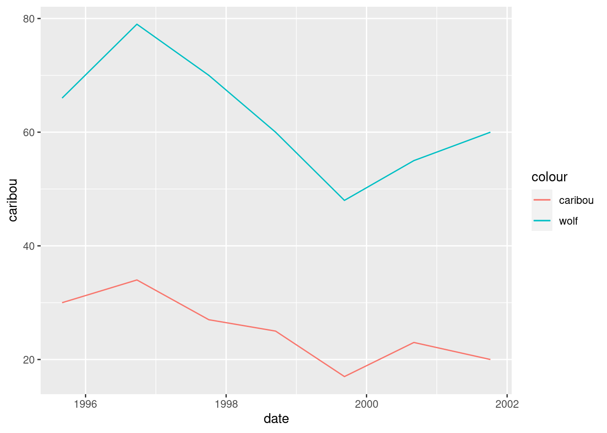
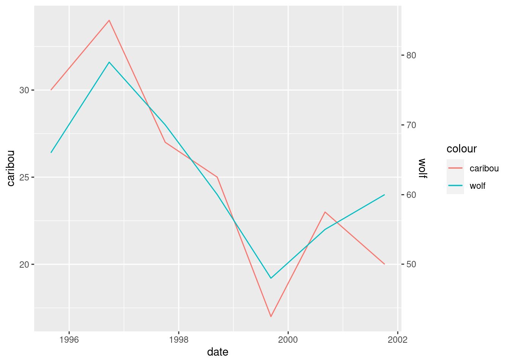
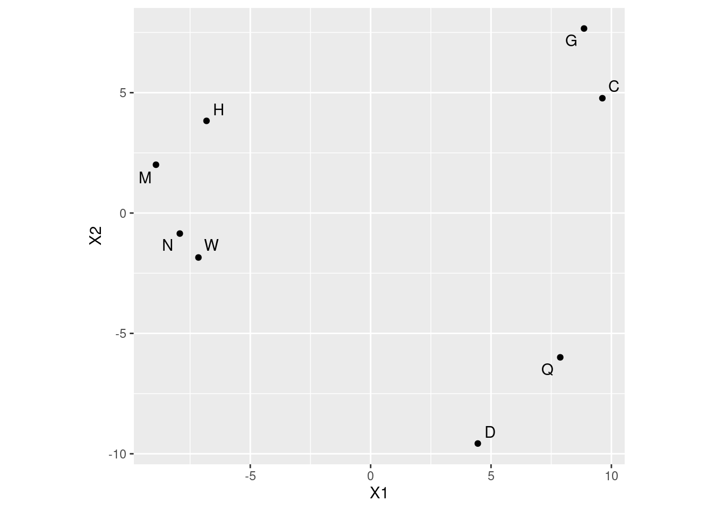
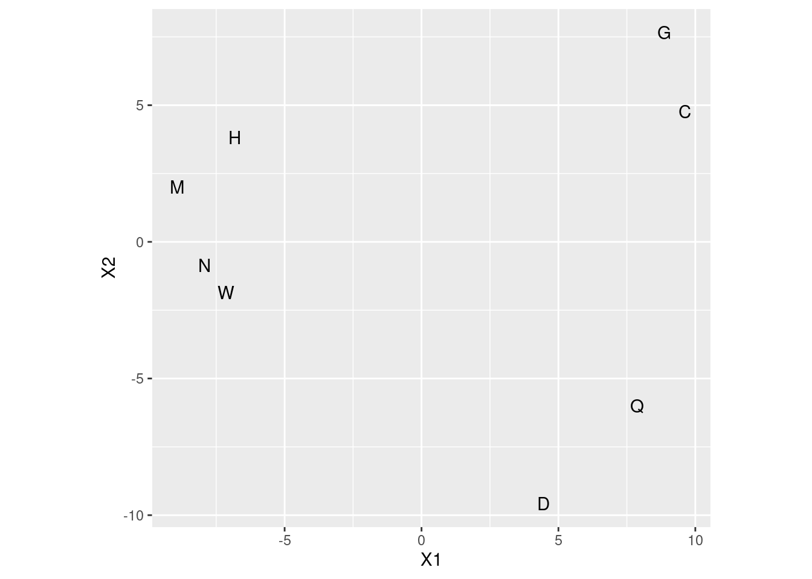

Chapter 35 Hierarchical cluster analysis
Packages for this chapter:
35.1 Sites on the sea bed
Biologists investigate the prevalence of
species of organism by sampling sites where the organisms might be,
taking a “grab” from the site, and sending the grabs to a laboratory
for analysis. The data in this question come from the sea bed. There
were 30 sites, labelled s1 through s30. At each
site, five species of organism, labelled a through
e, were of interest; the data shown in those columns of the
data set were the number of organisms of that species identified in
the grab from that site. There are some other columns in the
(original) data set that will not concern us. Our interest is in
seeing which sites are similar to which other sites, so that a cluster
analysis will be suitable.
When the data are counts of different species, as they are here, biologists often measure the dissimilarity in species prevalence profiles between two sites using something called the Bray-Curtis dissimilarity. It is not important to understand this for this question (though I explain it in my solutions). I calculated the Bray-Curtis dissimilarity between each pair of sites and stored the results in link.
Read in the dissimilarity data and check that you have 30 rows and 30 columns of dissimilarities.
Create a distance object out of your dissimilarities, bearing in mind that the values are distances (well, dissimilarities) already.
Fit a cluster analysis using single-linkage, and display a dendrogram of the results.
Now fit a cluster analysis using Ward’s method, and display a dendrogram of the results.
* On the Ward’s method clustering, how many clusters would you choose to divide the sites into? Draw rectangles around those clusters.
* The original data is in link. Read in the original data and verify that you again have 30 sites, variables called
athrougheand some others.Go back to your Ward method dendrogram with the red rectangles and find two sites in the same cluster. Display the original data for your two sites and see if you can explain why they are in the same cluster. It doesn’t matter which two sites you choose; the grader will merely check that your results look reasonable.
Obtain the cluster memberships for each site, for your preferred number of clusters from part (here). Add a column to the original data that you read in, in part (here), containing those cluster memberships, as a factor. Obtain a plot that will enable you to assess the relationship between those clusters and
pollution. (Once you have the cluster memberships, you can add them to the data frame and make the graph using a pipe.) What do you see?
35.2 Dissimilarities between fruits
Consider the fruits apple, orange, banana, pear, strawberry, blueberry. We are going to work with these four properties of fruits:
has a round shape
Is sweet
Is crunchy
Is a berry
Make a table with fruits as columns, and with rows “round shape”, “sweet”, “crunchy”, “berry”. In each cell of the table, put a 1 if the fruit has the property named in the row, and a 0 if it does not. (This is your opinion, and may not agree with mine. That doesn’t matter, as long as you follow through with whatever your choices were.)
We’ll define the dissimilarity between two fruits to be the number of qualities they disagree on. Thus, for example, the dissimilarity between Apple and Orange is 1 (an apple is crunchy and an orange is not, but they agree on everything else). Calculate the dissimilarity between each pair of fruits, and make a square table that summarizes the results. (To save yourself some work, note that the dissimilarity between a fruit and itself must be zero, and the dissimilarity between fruits A and B is the same as that between B and A.) Save your table of dissimilarities into a file for the next part.
Do a hierarchical cluster analysis using complete linkage. Display your dendrogram.
How many clusters, of what fruits, do you seem to have? Explain briefly.
Pick a pair of clusters (with at least 2 fruits in each) from your dendrogram. Verify that the complete-linkage distance on your dendrogram is correct.
35.3 Similarity of species
Two scientists assessed the dissimilarity between a number of species by recording the number of positions in the protein molecule cytochrome-\(c\) where the two species being compared have different amino acids. The dissimilarities that they recorded are in link.
Read the data into a data frame and take a look at it.
Bearing in mind that the values you read in are already dissimilarities, convert them into a
distobject suitable for running a cluster analysis on, and display the results. (Note that you need to get rid of any columns that don’t contain numbers.)Run a cluster analysis using single-linkage and obtain a dendrogram.
Run a cluster analysis using Ward’s method and obtain a dendrogram.
Describe how the two dendrograms from the last two parts look different.
Looking at your clustering for Ward’s method, what seems to be a sensible number of clusters? Draw boxes around those clusters.
List which cluster each species is in, for your preferred number of clusters (from Ward’s method).
35.4 Bridges in Pittsburgh
The city of Pittsburgh, Pennsylvania, lies where three rivers, the Allegheny, Monongahela, and Ohio, meet.36 It has long been important to build bridges there, to enable its residents to cross the rivers safely. See link for a listing (with pictures) of the bridges. The data at link contains detail for a large number of past and present bridges in Pittsburgh. All the variables we will use are categorical. Here they are:
ididentifying the bridge (we ignore)river: initial letter of river that the bridge crosseslocation: a numerical code indicating the location within Pittsburgh (we ignore)erected: time period in which the bridge was built (a name, fromCRAFTS, earliest, toMODERN, most recent.purpose: what the bridge carries: foot traffic (“walk”), water (aqueduct), road or railroad.lengthcategorized as long, medium or short.lanesof traffic (or number of railroad tracks): a number, 1, 2, 4 or 6, that we will count as categorical.clear_g: whether a vertical navigation requirement was included in the bridge design (that is, ships of a certain height had to be able to get under the bridge). I thinkGmeans “yes”.t_d: method of construction.DECKmeans the bridge deck is on top of the construction,THROUGHmeans that when you cross the bridge, some of the bridge supports are next to you or above you.materialthe bridge is made of: iron, steel or wood.span: whether the bridge covers a short, medium or long distance.rel_l: Relative length of the main span of the bridge (between the two central piers) to the total crossing length. The categories areS,S-FandF. I don’t know what these mean.typeof bridge: wood, suspension, arch and three types of truss bridge: cantilever, continuous and simple.
The website link is an
excellent source of information about bridges. (That’s where I learned
the difference between THROUGH and DECK.) Wikipedia
also has a good article at
link. I also found
link
which is the best description I’ve seen of the variables.
The bridges are stored in CSV format. Some of the information is not known and was recorded in the spreadsheet as
?. Turn these into genuine missing values by addingna="?"to your file-reading command. Display some of your data, enough to see that you have some missing data.Verify that there are missing values in this dataset. To see them, convert the text columns temporarily to
factors usingmutate, and pass the resulting data frame intosummary.Use
drop_nato remove any rows of the data frame with missing values in them. How many rows do you have left?We are going to assess the dissimilarity between two bridges by the number of the categorical variables they disagree on. This is called a “simple matching coefficient”, and is the same thing we did in the question about clustering fruits based on their properties. This time, though, we want to count matches in things that are rows of our data frame (properties of two different bridges), so we will need to use a strategy like the one I used in calculating the Bray-Curtis distances. First, write a function that takes as input two vectors
vandwand counts the number of their entries that differ (comparing the first with the first, the second with the second, , the last with the last. I can think of a quick way and a slow way, but either way is good.) To test your function, create two vectors (usingc) of the same length, and see whether it correctly counts the number of corresponding values that are different.Write a function that has as input two row numbers and a data frame to take those rows from. The function needs to select all the columns except for
idandlocation, select the rows required one at a time, and turn them into vectors. (There may be some repetitiousness here. That’s OK.) Then those two vectors are passed into the function you wrote in the previous part, and the count of the number of differences is returned. This is like the code in the Bray-Curtis problem. Test your function on rows 3 and 4 of your bridges data set (with the missings removed). There should be six variables that are different.Create a matrix or data frame of pairwise dissimilarities between each pair of bridges (using only the ones with no missing values). Use loops, or
crossingandrowwise, as you prefer. Display the first six rows of your matrix (usinghead) or the first few rows of your data frame. (The whole thing is big, so don’t display it all.)Turn your matrix or data frame into a
distobject. (If you couldn’t create a matrix or data frame of dissimilarities, read them in from link.) Do not display your distance object.Run a cluster analysis using Ward’s method, and display a dendrogram. The labels for the bridges (rows of the data frame) may come out too big; experiment with a
cexless than 1 on the plot so that you can see them.How many clusters do you think is reasonable for these data? Draw them on your plot.
Pick three bridges in the same one of your clusters (it doesn’t matter which three bridges or which cluster). Display the data for these bridges. Does it make sense that these three bridges ended up in the same cluster? Explain briefly.
My solutions follow:
35.5 Sites on the sea bed
Biologists investigate the prevalence of
species of organism by sampling sites where the organisms might be,
taking a “grab” from the site, and sending the grabs to a laboratory
for analysis. The data in this question come from the sea bed. There
were 30 sites, labelled s1 through s30. At each
site, five species of organism, labelled a through
e, were of interest; the data shown in those columns of the
data set were the number of organisms of that species identified in
the grab from that site. There are some other columns in the
(original) data set that will not concern us. Our interest is in
seeing which sites are similar to which other sites, so that a cluster
analysis will be suitable.
When the data are counts of different species, as they are here, biologists often measure the dissimilarity in species prevalence profiles between two sites using something called the Bray-Curtis dissimilarity. It is not important to understand this for this question (though I explain it in my solutions). I calculated the Bray-Curtis dissimilarity between each pair of sites and stored the results in link.
- Read in the dissimilarity data and check that you have 30 rows and 30 columns of dissimilarities.
Solution
##
## ── Column specification ──────────────────────────────────────────────────────────────────────────────────────────────────────────────────────────────────────────────────────────────────────
## cols(
## .default = col_double()
## )
## ℹ Use `spec()` for the full column specifications.## # A tibble: 30 x 30
## s1 s2 s3 s4 s5 s6 s7 s8 s9 s10 s11 s12 s13
## <dbl> <dbl> <dbl> <dbl> <dbl> <dbl> <dbl> <dbl> <dbl> <dbl> <dbl> <dbl> <dbl>
## 1 0 0.457 0.296 0.467 0.477 0.522 0.455 0.933 0.333 0.403 0.357 0.375 0.577
## 2 0.457 0 0.481 0.556 0.348 0.229 0.415 0.930 0.222 0.447 0.566 0.215 0.671
## 3 0.296 0.481 0 0.467 0.508 0.522 0.491 1 0.407 0.343 0.214 0.325 0.654
## 4 0.467 0.556 0.467 0 0.786 0.692 0.870 1 0.639 0.379 0.532 0.549 0.302
## 5 0.477 0.348 0.508 0.786 0 0.419 0.212 0.854 0.196 0.564 0.373 0.319 0.714
## 6 0.522 0.229 0.522 0.692 0.419 0 0.509 0.933 0.243 0.571 0.530 0.237 0.676
## 7 0.455 0.415 0.491 0.870 0.212 0.509 0 0.806 0.317 0.588 0.509 0.358 0.925
## 8 0.933 0.930 1 1 0.854 0.933 0.806 0 0.895 1 0.938 0.929 0.929
## 9 0.333 0.222 0.407 0.639 0.196 0.243 0.317 0.895 0 0.489 0.349 0.159 0.595
## 10 0.403 0.447 0.343 0.379 0.564 0.571 0.588 1 0.489 0 0.449 0.419 0.415
## # … with 20 more rows, and 17 more variables: s14 <dbl>, s15 <dbl>, s16 <dbl>,
## # s17 <dbl>, s18 <dbl>, s19 <dbl>, s20 <dbl>, s21 <dbl>, s22 <dbl>,
## # s23 <dbl>, s24 <dbl>, s25 <dbl>, s26 <dbl>, s27 <dbl>, s28 <dbl>,
## # s29 <dbl>, s30 <dbl>Check. The columns are labelled with
the site names. (As I originally set this question, the data file was
read in with read.csv instead, and the site names were read
in as row names as well: see discussion elsewhere about row names. But
in the tidyverse we don’t have row names.)
\(\blacksquare\)
- Create a distance object out of your dissimilarities, bearing in mind that the values are distances (well, dissimilarities) already.
Solution
This one needs as.dist to convert already-distances into
a dist object. (dist would have
calculated distances from things that were not
distances/dissimilarities yet.)
If you check, you’ll see that the site names are being used to label rows and columns of the dissimilarity matrix as displayed. The lack of row names is not hurting us.
\(\blacksquare\)
- Fit a cluster analysis using single-linkage, and display a dendrogram of the results.
Solution
This:

This is a base-graphics plot, it not having any of the nice
ggplot things. But it does the job.
Single-linkage tends to produce “stringy” clusters, since the individual being added to a cluster only needs to be close to one thing in the cluster. Here, that manifests itself in sites getting added to clusters one at a time: for example, sites 25 and 26 get joined together into a cluster, and then in sequence sites 6, 16, 27, 30 and 22 get joined on to it (rather than any of those sites being formed into clusters first).
You might37 be wondering what else is in that
hclust object, and what it’s good for. Let’s take a look:
## List of 7
## $ merge : int [1:29, 1:2] -3 -25 -6 -9 -28 -16 -27 -1 -30 -24 ...
## $ height : num [1:29] 0.1 0.137 0.152 0.159 0.159 ...
## $ order : int [1:30] 21 14 29 23 15 1 19 18 2 7 ...
## $ labels : chr [1:30] "s1" "s2" "s3" "s4" ...
## $ method : chr "single"
## $ call : language hclust(d = d, method = "single")
## $ dist.method: NULL
## - attr(*, "class")= chr "hclust"You might guess that labels contains the names of the sites,
and you’d be correct. Of the other things, the most interesting are
merge and height. Let’s display them side by side:
## height
## [1,] 0.1000000 -3 -20
## [2,] 0.1369863 -25 -26
## [3,] 0.1523179 -6 2
## [4,] 0.1588785 -9 -12
## [5,] 0.1588785 -28 4
## [6,] 0.1617647 -16 3
## [7,] 0.1633987 -27 6
## [8,] 0.1692308 -1 -19
## [9,] 0.1807229 -30 7
## [10,] 0.1818182 -24 5
## [11,] 0.1956522 -5 10
## [12,] 0.2075472 -15 8
## [13,] 0.2083333 -14 -29
## [14,] 0.2121212 -7 11
## [15,] 0.2142857 -11 1
## [16,] 0.2149533 -2 14
## [17,] 0.2191781 -18 16
## [18,] 0.2205882 -22 9
## [19,] 0.2285714 17 18
## [20,] 0.2307692 12 19
## [21,] 0.2328767 -10 15
## [22,] 0.2558140 20 21
## [23,] 0.2658228 -23 22
## [24,] 0.2666667 13 23
## [25,] 0.3023256 -4 -13
## [26,] 0.3333333 24 25
## [27,] 0.3571429 -21 26
## [28,] 0.4285714 -8 -17
## [29,] 0.6363636 27 28height is the vertical scale of the dendrogram. The first
height is 0.1, and if you look at the bottom of the dendrogram, the
first sites to be joined together are sites 3 and 20 at height 0.1
(the horizontal bar joining sites 3 and 20 is what you are looking
for). In the last two columns, which came from merge, you see
what got joined together, with negative numbers meaning individuals
(individual sites), and positive numbers meaning clusters formed
earlier. So, if you look at the third line, at height 0.152, site 6
gets joined to the cluster formed on line 2, which (looking back) we
see consists of sites 25 and 26. Go back now to the dendrogram; about
\({3\over 4}\) of the way across, you’ll see sites 25 and 26 joined
together into a cluster, and a little higher up the page, site 6 joins
that cluster.
I said that single linkage produces stringy clusters, and the way that
shows up in merge is that you often get an individual site
(negative number) joined onto a previously-formed cluster (positive
number). This is in contrast to Ward’s method, below.
\(\blacksquare\)
- Now fit a cluster analysis using Ward’s method, and display a dendrogram of the results.
Solution
Same thing, with small changes. The hard part is getting the name
of the method right:

The site numbers were a bit close together, so I printed them out
smaller than usual size (which is what the cex and a number
less than 1 is doing: 70% of normal size).38
This time, there is a greater tendency for sites to be joined into
small clusters first, then these small clusters are joined
together. It’s not perfect, but there is a greater tendency for it to
happen here.
This shows up in merge too:
## [,1] [,2]
## [1,] -3 -20
## [2,] -25 -26
## [3,] -9 -12
## [4,] -28 3
## [5,] -1 -19
## [6,] -6 2
## [7,] -14 -29
## [8,] -5 -7
## [9,] -18 -24
## [10,] -27 6
## [11,] -16 -22
## [12,] -2 4
## [13,] -30 10
## [14,] -15 5
## [15,] -23 8
## [16,] -4 -13
## [17,] -11 1
## [18,] 9 12
## [19,] -10 17
## [20,] -8 -17
## [21,] 11 13
## [22,] -21 15
## [23,] 7 22
## [24,] 14 19
## [25,] 16 24
## [26,] 18 21
## [27,] 20 23
## [28,] 26 27
## [29,] 25 28There are relatively few instances of a site being joined to a cluster of sites. Usually, individual sites get joined together (negative with a negative, mainly at the top of the list), or clusters get joined to clusters (positive with positive, mainly lower down the list).
\(\blacksquare\)
- * On the Ward’s method clustering, how many clusters would you choose to divide the sites into? Draw rectangles around those clusters.
Solution
You may need to draw the plot again. In any case, a second line of code draws the rectangles. I think three clusters is good, but you can have a few more than that if you like:

What I want to see is a not-unreasonable choice of number of clusters (I think you could go up to about six), and then a depiction of that number of clusters on the plot. This is six clusters:

In all your plots, the cex is optional, but you can compare
the plots with it and without it and see which you prefer.
Looking at this, even seven clusters might work, but I doubt you’d want to go beyond that. The choice of the number of clusters is mainly an aesthetic39 decision.
\(\blacksquare\)
- * The original data is in
link. Read in the
original data and verify that you again have 30 sites, variables
called
athrougheand some others.
Solution
Thus:
##
## ── Column specification ──────────────────────────────────────────────────────────────────────────────────────────────────────────────────────────────────────────────────────────────────────
## cols(
## site = col_character(),
## a = col_double(),
## b = col_double(),
## c = col_double(),
## d = col_double(),
## e = col_double(),
## depth = col_double(),
## pollution = col_double(),
## temp = col_double(),
## sediment = col_character()
## )## # A tibble: 30 x 10
## site a b c d e depth pollution temp sediment
## <chr> <dbl> <dbl> <dbl> <dbl> <dbl> <dbl> <dbl> <dbl> <chr>
## 1 s1 0 2 9 14 2 72 4.8 3.5 s
## 2 s2 26 4 13 11 0 75 2.8 2.5 c
## 3 s3 0 10 9 8 0 59 5.4 2.7 c
## 4 s4 0 0 15 3 0 64 8.2 2.9 s
## 5 s5 13 5 3 10 7 61 3.9 3.1 c
## 6 s6 31 21 13 16 5 94 2.6 3.5 g
## 7 s7 9 6 0 11 2 53 4.6 2.9 s
## 8 s8 2 0 0 0 1 61 5.1 3.3 c
## 9 s9 17 7 10 14 6 68 3.9 3.4 c
## 10 s10 0 5 26 9 0 69 10 3 s
## # … with 20 more rows30 observations of 10 variables, including a through
e. Check.
I gave this a weird name so that it didn’t overwrite my original
seabed, the one I turned into a distance object, though I
don’t think I really needed to worry.
These data came from link,40 from which I also got the definition of the Bray-Curtis dissimilarity that I calculated for you. The data are in Exhibit 1.1 of that book.
\(\blacksquare\)
- Go back to your Ward method dendrogram with the red rectangles and find two sites in the same cluster. Display the original data for your two sites and see if you can explain why they are in the same cluster. It doesn’t matter which two sites you choose; the grader will merely check that your results look reasonable.
Solution
I want my two sites to be very similar, so I’m looking at two sites
that were joined into a cluster very early on, sites s3 and
s20. As I said, I don’t mind which ones you pick, but being
in the same cluster will be easiest to justify if you pick sites
that were joined together early.
Then you need to display just those rows of the original data (that
you just read in), which is a filter with an “or” in it:
## # A tibble: 2 x 10
## site a b c d e depth pollution temp sediment
## <chr> <dbl> <dbl> <dbl> <dbl> <dbl> <dbl> <dbl> <dbl> <chr>
## 1 s3 0 10 9 8 0 59 5.4 2.7 c
## 2 s20 0 10 14 9 0 73 5.6 3 sI think this odd-looking thing also works:
## # A tibble: 2 x 10
## site a b c d e depth pollution temp sediment
## <chr> <dbl> <dbl> <dbl> <dbl> <dbl> <dbl> <dbl> <dbl> <chr>
## 1 s3 0 10 9 8 0 59 5.4 2.7 c
## 2 s20 0 10 14 9 0 73 5.6 3 sI’ll also take displaying the lines one at a time, though it is easier to compare them if they are next to each other.
Why are they in the same cluster? To be similar (that is, have a low
dissimilarity), the values of a through e should be
close together. Here, they certainly are: a and e
are both zero for both sites, and b, c and
d are around 10 for both sites. So I’d call that similar.
You will probably pick a different pair of sites, and thus your detailed discussion will differ from mine, but the general point of it should be the same: pick a pair of sites in the same cluster (1 mark), display those two rows of the original data (1 mark), some sensible discussion of how the sites are similar (1 mark). As long as you pick two sites in the same one of your clusters, I don’t mind which ones you pick. The grader will check that your two sites were indeed in the same one of your clusters, then will check that you do indeed display those two sites from the original data.
What happens if you pick sites from different clusters? Let’s pick two very dissimilar ones, sites 4 and 7 from opposite ends of my dendrogram:
## # A tibble: 2 x 10
## site a b c d e depth pollution temp sediment
## <chr> <dbl> <dbl> <dbl> <dbl> <dbl> <dbl> <dbl> <dbl> <chr>
## 1 s4 0 0 15 3 0 64 8.2 2.9 s
## 2 s7 9 6 0 11 2 53 4.6 2.9 sSite s4 has no a or b at all, and site
s7 has quite a few; site s7 has no c at
all, while site s4 has a lot. These are very different sites.
Extra: now that you’ve seen what the original data look like, I should
explain how I got the Bray-Curtis dissimilarities. As I said, only the
counts of species a through e enter into the
calculation; the other variables have nothing to do with it.
Let’s simplify matters by pretending that we have only two species (we can call them A and B), and a vector like this:
which says that we have 10 organisms of species A and 3 of species B at a site. This is rather similar to this site:
but very different from this site:
The way you calculate the Bray-Curtis dissimilarity is to take the absolute difference of counts of organisms of each species:
## [1] 2 1and add those up:
## [1] 3and then divide by the total of all the frequencies:
## [1] 0.12The smaller this number is, the more similar the sites are. So you
might imagine that v1 and v3 would be more dissimilar:
## [1] 0.7and so it is. The scaling of the Bray-Curtis dissimilarity is that the smallest it can be is 0, if the frequencies of each of the species are exactly the same at the two sites, and the largest it can be is 1, if one site has only species A and the other has only species B. (I’ll demonstrate that in a moment.) You might imagine that we’ll be doing this calculation a lot, and so we should define a function to automate it. Hadley Wickham (in “R for Data Science”) says that you should copy and paste some code (as I did above) no more than twice; if you need to do it again, you should write a function instead. The thinking behind this is if you copy and paste and change something (like a variable name), you’ll need to make the change everywhere, and it’s so easy to miss one. So, my function is (copying and pasting my code from above into the body of the function, which is Wickham-approved since it’s only my second time):
Let’s test it on my made-up sites, making up one more:
## [1] 0.12## [1] 0.7## [1] 0## [1] 1These all check out. The first two are repeats of the ones we did
before. The third one says that if you calculate Bray-Curtis for two
sites with the exact same frequencies all the way along, you get the
minimum value of 0; the fourth one says that when site v3
only has species B and site v4 only has species A, you get
the maximum value of 1.
But note this:
## [1] 8 4## [1] 16 8## [1] 0.3333333You might say that v2 and 2*v2 are the same
distribution, and so they are, proportionately. But Bray-Curtis is
assessing whether the frequencies are the same (as opposed to
something like a chi-squared test that is assessing
proportionality).41
So far so good. Now we have to do this for the actual data. The first
issue42 is that the data is some of the
row of the original data frame; specifically, it’s columns 2 through
6. For example, sites s3 and s20 of the original
data frame look like this:
## # A tibble: 2 x 10
## site a b c d e depth pollution temp sediment
## <chr> <dbl> <dbl> <dbl> <dbl> <dbl> <dbl> <dbl> <dbl> <chr>
## 1 s3 0 10 9 8 0 59 5.4 2.7 c
## 2 s20 0 10 14 9 0 73 5.6 3 sand we don’t want to feed the whole of those into braycurtis,
just the second through sixth elements of them. So let’s write another
function that extracts the columns a through e of its
inputs for given rows, and passes those on to the braycurtis
that we wrote before. This is a little fiddly, but bear with me. The
input to the function is the data frame, then the two sites that we want:
First, though, what happens if filter site s3?
## # A tibble: 1 x 10
## site a b c d e depth pollution temp sediment
## <chr> <dbl> <dbl> <dbl> <dbl> <dbl> <dbl> <dbl> <dbl> <chr>
## 1 s3 0 10 9 8 0 59 5.4 2.7 cThis is a one-row data frame, not a vector as our function expects. Do we need to worry about it? First, grab the right columns, so that we will know what our function has to do:
## # A tibble: 1 x 5
## a b c d e
## <dbl> <dbl> <dbl> <dbl> <dbl>
## 1 0 10 9 8 0That leads us to this function, which is a bit repetitious, but for
two repeats I can handle it. I haven’t done anything about the fact
that x and y below are actually data frames:
braycurtis.spec <- function(d, i, j) {
d %>% filter(site == i) %>% select(a:e) -> x
d %>% filter(site == j) %>% select(a:e) -> y
braycurtis(x, y)
}The first time I did this, I had the filter and the
select in the opposite order, so I was neatly removing
the column I wanted to filter by before I did the
filter!
The first two lines pull out columns a through e of
(respectively) sites i and j.
If I were going to create more than two things like x and
y, I would have hived that off
into a separate function as well, but I didn’t.
Sites 3 and 20 were the two sites I chose before as being similar ones (in the same cluster). So the dissimilarity should be small:
## [1] 0.1and so it is. Is it about right? The c differ by 5, the
d differ by one, and the total frequency in both rows is
about 60, so the dissimilarity should be about \(6/60=0.1\), as it is
(exactly, in fact).
This, you will note, works. I think R has taken the attitude that it
can treat these one-row data frames as if they were vectors.
This is the cleaned-up version of my function. When I first wrote it,
I printed out x and y, so that I could
check that they were what I was expecting (they were).43
We have almost all the machinery we need. Now what we have to do is to
compare every site with every other site and compute the dissimilarity
between them. If you’re used to Python or another similar language,
you’ll recognize this as two loops, one inside the other. This can be done in R (and I’ll show you how), but I’d rather show you the Tidyverse way first.
The starting point is to make a vector containing all the sites, which is easier than you would guess:
## [1] "s1" "s2" "s3" "s4" "s5" "s6" "s7" "s8" "s9" "s10" "s11" "s12"
## [13] "s13" "s14" "s15" "s16" "s17" "s18" "s19" "s20" "s21" "s22" "s23" "s24"
## [25] "s25" "s26" "s27" "s28" "s29" "s30"Next, we need to make all possible pairs of sites, which we also know how to do:
## # A tibble: 900 x 2
## site1 site2
## <chr> <chr>
## 1 s1 s1
## 2 s1 s10
## 3 s1 s11
## 4 s1 s12
## 5 s1 s13
## 6 s1 s14
## 7 s1 s15
## 8 s1 s16
## 9 s1 s17
## 10 s1 s18
## # … with 890 more rowsNow, think about what to do in English first: “for each of the sites in site1, and for each of the sites in site2, taken in parallel, work out the Bray-Curtis distance.” This is, I hope,
making you think of rowwise:
## # A tibble: 900 x 3
## # Rowwise:
## site1 site2 bray_curtis
## <chr> <chr> <dbl>
## 1 s1 s1 0
## 2 s1 s10 0.403
## 3 s1 s11 0.357
## 4 s1 s12 0.375
## 5 s1 s13 0.577
## 6 s1 s14 0.633
## 7 s1 s15 0.208
## 8 s1 s16 0.857
## 9 s1 s17 1
## 10 s1 s18 0.569
## # … with 890 more rows(you might notice that this takes a noticeable time to run.)
This is a “long” data frame, but for the cluster analysis, we need a wide one with sites in rows and columns, so let’s create that:
## # A tibble: 30 x 31
## site1 s1 s10 s11 s12 s13 s14 s15 s16 s17 s18 s19 s2
## <chr> <dbl> <dbl> <dbl> <dbl> <dbl> <dbl> <dbl> <dbl> <dbl> <dbl> <dbl> <dbl>
## 1 s1 0 0.403 0.357 0.375 0.577 0.633 0.208 0.857 1 0.569 0.169 0.457
## 2 s10 0.403 0 0.449 0.419 0.415 0.710 0.424 0.856 1 0.380 0.333 0.447
## 3 s11 0.357 0.449 0 0.463 0.481 0.765 0.491 0.66 1 0.627 0.343 0.566
## 4 s12 0.375 0.419 0.463 0 0.667 0.413 0.342 0.548 0.860 0.254 0.253 0.215
## 5 s13 0.577 0.415 0.481 0.667 0 1 0.608 0.875 1 0.667 0.524 0.671
## 6 s14 0.633 0.710 0.765 0.413 1 0 0.458 0.656 0.692 0.604 0.633 0.421
## 7 s15 0.208 0.424 0.491 0.342 0.608 0.458 0 0.856 0.733 0.548 0.25 0.375
## 8 s16 0.857 0.856 0.66 0.548 0.875 0.656 0.856 0 0.893 0.512 0.761 0.472
## 9 s17 1 1 1 0.860 1 0.692 0.733 0.893 0 0.914 0.905 0.862
## 10 s18 0.569 0.380 0.627 0.254 0.667 0.604 0.548 0.512 0.914 0 0.449 0.315
## # … with 20 more rows, and 18 more variables: s20 <dbl>, s21 <dbl>, s22 <dbl>,
## # s23 <dbl>, s24 <dbl>, s25 <dbl>, s26 <dbl>, s27 <dbl>, s28 <dbl>,
## # s29 <dbl>, s3 <dbl>, s30 <dbl>, s4 <dbl>, s5 <dbl>, s6 <dbl>, s7 <dbl>,
## # s8 <dbl>, s9 <dbl>That’s the data frame I shared with you.
The more Python-like way of doing it is a loop inside a loop. This
works in R, but it has more housekeeping and a few possibly unfamiliar
ideas. We are going to work with a matrix, and we access
elements of a matrix with two numbers inside square brackets, a row
number and a column number. We also have to initialize our matrix that
we’re going to fill with Bray-Curtis distances; I’ll fill it with \(-1\)
values, so that if any are left at the end, I’ll know I missed
something.
m <- matrix(-1, 30, 30)
for (i in 1:30) {
for (j in 1:30) {
m[i, j] <- braycurtis.spec(seabed.z, sites[i], sites[j])
}
}
rownames(m) <- sites
colnames(m) <- sites
head(m)## s1 s2 s3 s4 s5 s6 s7
## s1 0.0000000 0.4567901 0.2962963 0.4666667 0.4769231 0.5221239 0.4545455
## s2 0.4567901 0.0000000 0.4814815 0.5555556 0.3478261 0.2285714 0.4146341
## s3 0.2962963 0.4814815 0.0000000 0.4666667 0.5076923 0.5221239 0.4909091
## s4 0.4666667 0.5555556 0.4666667 0.0000000 0.7857143 0.6923077 0.8695652
## s5 0.4769231 0.3478261 0.5076923 0.7857143 0.0000000 0.4193548 0.2121212
## s6 0.5221239 0.2285714 0.5221239 0.6923077 0.4193548 0.0000000 0.5087719
## s8 s9 s10 s11 s12 s13 s14
## s1 0.9333333 0.3333333 0.4029851 0.3571429 0.3750000 0.5769231 0.6326531
## s2 0.9298246 0.2222222 0.4468085 0.5662651 0.2149533 0.6708861 0.4210526
## s3 1.0000000 0.4074074 0.3432836 0.2142857 0.3250000 0.6538462 0.6734694
## s4 1.0000000 0.6388889 0.3793103 0.5319149 0.5492958 0.3023256 0.8500000
## s5 0.8536585 0.1956522 0.5641026 0.3731343 0.3186813 0.7142857 0.2666667
## s6 0.9325843 0.2428571 0.5714286 0.5304348 0.2374101 0.6756757 0.5925926
## s15 s16 s17 s18 s19 s20 s21
## s1 0.2075472 0.8571429 1.0000000 0.5689655 0.1692308 0.3333333 0.7333333
## s2 0.3750000 0.4720000 0.8620690 0.3146853 0.3695652 0.4022989 0.6666667
## s3 0.3584906 0.7346939 1.0000000 0.5344828 0.3230769 0.1000000 0.8222222
## s4 0.4090909 0.9325843 1.0000000 0.6635514 0.4642857 0.3333333 0.8333333
## s5 0.4687500 0.5045872 0.8095238 0.5118110 0.3947368 0.5211268 0.3571429
## s6 0.5357143 0.2484076 0.9111111 0.2571429 0.3870968 0.4621849 0.6730769
## s22 s23 s24 s25 s26 s27 s28
## s1 0.7346939 0.4411765 0.5714286 0.7037037 0.6956522 0.6363636 0.3250000
## s2 0.3760000 0.5368421 0.2432432 0.3925926 0.3277311 0.3809524 0.2149533
## s3 0.6326531 0.5294118 0.3809524 0.6666667 0.6086957 0.6363636 0.5000000
## s4 0.9325843 0.8644068 0.5200000 0.9393939 0.9277108 0.9333333 0.5774648
## s5 0.3761468 0.2658228 0.4105263 0.5294118 0.4174757 0.3818182 0.3186813
## s6 0.2993631 0.4488189 0.3006993 0.1856287 0.1523179 0.2151899 0.2949640
## s29 s30
## s1 0.4339623 0.6071429
## s2 0.3500000 0.3669065
## s3 0.4339623 0.5892857
## s4 0.5454545 0.8446602
## s5 0.3125000 0.4796748
## s6 0.5357143 0.2163743Because my loops work with site numbers and my function works with site names, I have to remember to refer to the site names when I call my function. I also have to supply row and column names (the site names).
That looks all right. Are all my Bray-Curtis distances between 0 and 1? I can smoosh my matrix into a vector and summarize it:
## Min. 1st Qu. Median Mean 3rd Qu. Max.
## 0.0000 0.3571 0.5023 0.5235 0.6731 1.0000All the dissimilarities are correctly between 0 and 1. We can also check the one we did before:
## # A tibble: 1 x 1
## s20
## <dbl>
## 1 0.1or
## [1] 0.1Check.
\(\blacksquare\)
- Obtain the cluster memberships for each site, for your
preferred number of clusters from part (here). Add a
column to the original data that you read in, in part
(here), containing those cluster memberships, as a
factor. Obtain a plot that will enable you to assess the
relationship between those clusters and
pollution. (Once you have the cluster memberships, you can add them to the data frame and make the graph using a pipe.) What do you see?
Solution
Start by getting the clusters with cutree. I’m going with 3
clusters, though you can use the number of clusters you chose
before. (This is again making the grader’s life a misery, but her
instructions from me are to check that you have done something
reasonable, with the actual answer being less important.)
## s1 s2 s3 s4 s5 s6 s7 s8 s9 s10 s11 s12 s13 s14 s15 s16 s17 s18 s19 s20
## 1 2 1 1 3 2 3 3 2 1 1 2 1 3 1 2 3 2 1 1
## s21 s22 s23 s24 s25 s26 s27 s28 s29 s30
## 3 2 3 2 2 2 2 2 3 2Now, we add that to the original data, the data frame I called
seabed.z, and make a plot. The best one is a boxplot:
seabed.z %>%
mutate(cluster = factor(cluster)) %>%
ggplot(aes(x = cluster, y = pollution)) + geom_boxplot()
The clusters differ substantially in terms of the amount of pollution, with my cluster 1 being highest and my cluster 2 being lowest. (Cluster 3 has a low outlier.)
Any sensible plot will do here. I think boxplots are the best, but you could also do something like vertically-faceted histograms:
seabed.z %>%
mutate(cluster = factor(cluster)) %>%
ggplot(aes(x = pollution)) + geom_histogram(bins = 8) +
facet_grid(cluster ~ .)
which to my mind doesn’t show the differences as dramatically. (The bins are determined from all the data together, so that each facet actually has fewer than 8 bins. You can see where the bins would be if they had any data in them.)
Here’s how 5 clusters looks:
## s1 s2 s3 s4 s5 s6 s7 s8 s9 s10 s11 s12 s13 s14 s15 s16 s17 s18 s19 s20
## 1 2 1 1 3 4 3 5 2 1 1 2 1 3 1 4 5 2 1 1
## s21 s22 s23 s24 s25 s26 s27 s28 s29 s30
## 3 4 3 2 4 4 4 2 3 4seabed.z %>%
mutate(cluster = factor(cluster)) %>%
ggplot(aes(x = cluster, y = pollution)) + geom_boxplot()
This time, the picture isn’t quite so clear-cut, but clusters 1 and 5 are the highest in terms of pollution and cluster 4 is the lowest. I’m guessing that whatever number of clusters you choose, you’ll see some differences in terms of pollution.
What is interesting is that pollution had nothing to
do with the original formation of the clusters: that was based only on
which species were found at each site. So, what we have shown here is that
the amount of pollution has some association with what species are found at a
site.
A way to go on with this is to use the clusters as “known groups”
and predict the cluster membership from depth,
pollution and temp using a discriminant
analysis. Then you could plot the sites, colour-coded by what cluster
they were in, and even though you had three variables, you could plot
it in two dimensions (or maybe even one dimension, depending how many
LD’s were important).
\(\blacksquare\)
35.6 Dissimilarities between fruits
Consider the fruits apple, orange, banana, pear, strawberry, blueberry. We are going to work with these four properties of fruits:
has a round shape
Is sweet
Is crunchy
Is a berry
- Make a table with fruits as columns, and with rows “round shape”, “sweet”, “crunchy”, “berry”. In each cell of the table, put a 1 if the fruit has the property named in the row, and a 0 if it does not. (This is your opinion, and may not agree with mine. That doesn’t matter, as long as you follow through with whatever your choices were.)
Solution
Something akin to this:
Fruit Apple Orange Banana Pear Strawberry Blueberry
Round shape 1 1 0 0 0 1
Sweet 1 1 0 0 1 0
Crunchy 1 0 0 1 0 0
Berry 0 0 0 0 1 1
You’ll have to make a choice about “crunchy”. I usually eat pears before they’re fully ripe, so to me, they’re crunchy.
\(\blacksquare\)
- We’ll define the dissimilarity between two fruits to be the number of qualities they disagree on. Thus, for example, the dissimilarity between Apple and Orange is 1 (an apple is crunchy and an orange is not, but they agree on everything else). Calculate the dissimilarity between each pair of fruits, and make a square table that summarizes the results. (To save yourself some work, note that the dissimilarity between a fruit and itself must be zero, and the dissimilarity between fruits A and B is the same as that between B and A.) Save your table of dissimilarities into a file for the next part.
Solution
I got this, by counting them:
Fruit Apple Orange Banana Pear Strawberry Blueberry
Apple 0 1 3 2 3 3
Orange 1 0 2 3 2 2
Banana 3 2 0 1 2 2
Pear 2 3 1 0 3 3
Strawberry 3 2 2 3 0 2
Blueberry 3 2 2 3 2 0
I copied this into a file fruits.txt. Note that (i) I
have aligned my columns, so that I will be able to use
read_table later, and (ii) I have given the first column
a name, since read_table wants the same number of column
names as columns.
Extra: yes, you can do this in R too. We’ve seen some of the tricks before.
Let’s start by reading in my table of fruits and properties, which I saved in link:
##
## ── Column specification ──────────────────────────────────────────────────────────────────────────────────────────────────────────────────────────────────────────────────────────────────────
## cols(
## Property = col_character(),
## Apple = col_double(),
## Orange = col_double(),
## Banana = col_double(),
## Pear = col_double(),
## Strawberry = col_double(),
## Blueberry = col_double()
## )## # A tibble: 4 x 7
## Property Apple Orange Banana Pear Strawberry Blueberry
## <chr> <dbl> <dbl> <dbl> <dbl> <dbl> <dbl>
## 1 Round.shape 1 1 0 0 0 1
## 2 Sweet 1 1 0 0 1 0
## 3 Crunchy 1 0 0 1 0 0
## 4 Berry 0 0 0 0 1 1We don’t need the first column, so we’ll get rid of it:
## # A tibble: 4 x 6
## Apple Orange Banana Pear Strawberry Blueberry
## <dbl> <dbl> <dbl> <dbl> <dbl> <dbl>
## 1 1 1 0 0 0 1
## 2 1 1 0 0 1 0
## 3 1 0 0 1 0 0
## 4 0 0 0 0 1 1The loop way is the most direct. We’re going to be looking at
combinations of fruits and other fruits, so we’ll need two loops one
inside the other. It’s easier for this to work with column numbers,
which here are 1 through 6, and we’ll make a matrix m with
the dissimilarities in it, which we have to initialize first. I’ll
initialize it to a \(6\times 6\) matrix of -1, since the final
dissimilarities are 0 or bigger, and this way I’ll know if I forgot
anything.
Here’s where we are at so far:
fruit_m <- matrix(-1, 6, 6)
for (i in 1:6) {
for (j in 1:6) {
fruit_m[i, j] <- 3 # dissim between fruit i and fruit j
}
}This, of course, doesn’t run yet. The sticking point is how to calculate the dissimilarity between two columns. I think that is a separate thought process that should be in a function of its own. The inputs are the two column numbers, and a data frame to get those columns from:
dissim <- function(i, j, d) {
x <- d %>% select(i)
y <- d %>% select(j)
sum(x != y)
}
dissim(1, 2, fruit2)## Note: Using an external vector in selections is ambiguous.
## ℹ Use `all_of(i)` instead of `i` to silence this message.
## ℹ See <https://tidyselect.r-lib.org/reference/faq-external-vector.html>.
## This message is displayed once per session.## Note: Using an external vector in selections is ambiguous.
## ℹ Use `all_of(j)` instead of `j` to silence this message.
## ℹ See <https://tidyselect.r-lib.org/reference/faq-external-vector.html>.
## This message is displayed once per session.## [1] 1Apple and orange differ by one (not being crunchy). The process is:
grab the \(i\)-th column and call it x, grab the \(j\)-th column
and call it y. These are two one-column data frames with four
rows each (the four properties). x!=y goes down the rows, and
for each one gives a TRUE if they’re different and a
FALSE if they’re the same. So x!=y is a collection
of four T-or-F values. This seems backwards, but I was thinking of
what we want to do: we want to count the number of different
ones. Numerically, TRUE counts as 1 and FALSE as 0,
so we should make the thing we’re counting (the different ones) come
out as TRUE. To count the number of TRUEs (1s), add
them up.
That was a complicated thought process, so it was probably wise to write a function to do it. Now, in our loop, we only have to call the function (having put some thought into getting it right):
fruit_m <- matrix(-1, 6, 6)
for (i in 1:6) {
for (j in 1:6) {
fruit_m[i, j] <- dissim(i, j, fruit2)
}
}
fruit_m## [,1] [,2] [,3] [,4] [,5] [,6]
## [1,] 0 1 3 2 3 3
## [2,] 1 0 2 3 2 2
## [3,] 3 2 0 1 2 2
## [4,] 2 3 1 0 3 3
## [5,] 3 2 2 3 0 2
## [6,] 3 2 2 3 2 0The last step is re-associate the fruit names with this matrix. This
is a matrix so it has a rownames and a
colnames. We set both of those, but first we have to get the
fruit names from fruit2:
fruit_names <- names(fruit2)
rownames(fruit_m) <- fruit_names
colnames(fruit_m) <- fruit_names
fruit_m## Apple Orange Banana Pear Strawberry Blueberry
## Apple 0 1 3 2 3 3
## Orange 1 0 2 3 2 2
## Banana 3 2 0 1 2 2
## Pear 2 3 1 0 3 3
## Strawberry 3 2 2 3 0 2
## Blueberry 3 2 2 3 2 0This is good to go into the cluster analysis (happening later).
There is a tidyverse way to do this also. It’s actually a lot
like the loop way in its conception, but the coding looks
different. We start by making all combinations of the fruit names with
each other, which is crossing:
## # A tibble: 36 x 2
## fruit other
## <chr> <chr>
## 1 Apple Apple
## 2 Apple Banana
## 3 Apple Blueberry
## 4 Apple Orange
## 5 Apple Pear
## 6 Apple Strawberry
## 7 Banana Apple
## 8 Banana Banana
## 9 Banana Blueberry
## 10 Banana Orange
## # … with 26 more rowsNow, we want a function that, given any two fruit names, works out the dissimilarity between them. A happy coincidence is that we can use the function we had before, unmodified! How? Take a look:
dissim <- function(i, j, d) {
x <- d %>% select(i)
y <- d %>% select(j)
sum(x != y)
}
dissim("Apple", "Orange", fruit2)## [1] 1select can take a column number or a column name, so
that running it with column names gives the right answer.
Now, we want to run this function for each of the pairs in
combos. This is rowwise, since our function takes only one fruit and one other fruit at a time, not all of them at once:
## # A tibble: 36 x 3
## # Rowwise:
## fruit other dissim
## <chr> <chr> <int>
## 1 Apple Apple 0
## 2 Apple Banana 3
## 3 Apple Blueberry 3
## 4 Apple Orange 1
## 5 Apple Pear 2
## 6 Apple Strawberry 3
## 7 Banana Apple 3
## 8 Banana Banana 0
## 9 Banana Blueberry 2
## 10 Banana Orange 2
## # … with 26 more rowsThis would work just as well using fruit1, with the column of properties, rather than
fruit2, since we are picking out the columns by name rather
than number.
To make this into something we can turn into a dist object
later, we need to pivot-wider the column other to make a
square array:
combos %>%
rowwise() %>%
mutate(dissim = dissim(fruit, other, fruit2)) %>%
pivot_wider(names_from = other, values_from = dissim) -> fruit_spread
fruit_spread## # A tibble: 6 x 7
## fruit Apple Banana Blueberry Orange Pear Strawberry
## <chr> <int> <int> <int> <int> <int> <int>
## 1 Apple 0 3 3 1 2 3
## 2 Banana 3 0 2 2 1 2
## 3 Blueberry 3 2 0 2 3 2
## 4 Orange 1 2 2 0 3 2
## 5 Pear 2 1 3 3 0 3
## 6 Strawberry 3 2 2 2 3 0Done!
\(\blacksquare\)
- Do a hierarchical cluster analysis using complete linkage. Display your dendrogram.
Solution
First, we need to take one of our matrices of dissimilarities
and turn it into a dist object. Since I asked you to
save yours into a file, let’s start from there. Mine is aligned
columns:
##
## ── Column specification ──────────────────────────────────────────────────────────────────────────────────────────────────────────────────────────────────────────────────────────────────────
## cols(
## fruit = col_character(),
## Apple = col_double(),
## Orange = col_double(),
## Banana = col_double(),
## Pear = col_double(),
## Strawberry = col_double(),
## Blueberry = col_double()
## )## # A tibble: 6 x 7
## fruit Apple Orange Banana Pear Strawberry Blueberry
## <chr> <dbl> <dbl> <dbl> <dbl> <dbl> <dbl>
## 1 Apple 0 1 3 2 3 3
## 2 Orange 1 0 2 3 2 2
## 3 Banana 3 2 0 1 2 2
## 4 Pear 2 3 1 0 3 3
## 5 Strawberry 3 2 2 3 0 2
## 6 Blueberry 3 2 2 3 2 0Then turn it into a dist object. The first step is to take
off the first column, since as.dist can get the names from
the columns:
## Apple Orange Banana Pear Strawberry
## Orange 1
## Banana 3 2
## Pear 2 3 1
## Strawberry 3 2 2 3
## Blueberry 3 2 2 3 2If you forget to take off the first column, this happens:
## Warning in storage.mode(m) <- "numeric": NAs introduced by coercion## Warning in as.dist.default(dissims): non-square matrix## Error in dimnames(df) <- if (is.null(labels)) list(seq_len(size), seq_len(size)) else list(labels, : length of 'dimnames' [1] not equal to array extentThe key thing here is “non-square matrix”: you have one more column than you have rows, since you have a column of fruit names.
This one is as.dist since you already have dissimilarities
and you want to arrange them into the right type of
thing. dist is for calculating dissimilarities, which
we did before, so we don’t want to do that now.
Now, after all that work, the actual cluster analysis and dendrogram:

\(\blacksquare\)
- How many clusters, of what fruits, do you seem to have? Explain briefly.
Solution
I reckon I have three clusters: strawberry and blueberry in one, apple and orange in the second, and banana and pear in the third. (If your dissimilarities were different from mine, your dendrogram will be different also.)
\(\blacksquare\)
- Pick a pair of clusters (with at least 2 fruits in each) from your dendrogram. Verify that the complete-linkage distance on your dendrogram is correct.
Solution
I’ll pick strawberry-blueberry and and apple-orange. I’ll arrange the dissimilarities like this:
apple orange
strawberry 3 2
blueberry 3 2
The largest of those is 3, so that’s the complete-linkage
distance. That’s also what the dendrogram says.
(Likewise, the smallest of those is 2, so 2 is the
single-linkage distance.) That is to say, the largest distance or
dissimilarity
from anything in one cluster to anything in the other is 3, and
the smallest is 2.
I don’t mind which pair of clusters you take, as long as you spell
out the dissimilarity (distance) between each fruit in each
cluster, and take the maximum of those. Besides, if your
dissimilarities are different from mine, your complete-linkage
distance could be different from mine also. The grader will have
to use her judgement!44
The important point is that you assess the dissimilarities between
fruits in one cluster and fruits in the other. The dissimilarities
between fruits in the same cluster don’t enter into it.45
As it happens, all my complete-linkage distances between clusters
(of at least 2 fruits) are 3. The single-linkage ones are
different, though:

All the single-linkage cluster distances are 2. (OK, so this wasn’t a very interesting example, but I wanted to give you one where you could calculate what was going on.)
\(\blacksquare\)
35.7 Similarity of species
Two scientists assessed the dissimilarity between a number of species by recording the number of positions in the protein molecule cytochrome-\(c\) where the two species being compared have different amino acids. The dissimilarities that they recorded are in link.
- Read the data into a data frame and take a look at it.
Solution
Nothing much new here:
##
## ── Column specification ──────────────────────────────────────────────────────────────────────────────────────────────────────────────────────────────────────────────────────────────────────
## cols(
## what = col_character(),
## Man = col_double(),
## Monkey = col_double(),
## Horse = col_double(),
## Pig = col_double(),
## Pigeon = col_double(),
## Tuna = col_double(),
## Mould = col_double(),
## Fungus = col_double()
## )## # A tibble: 8 x 9
## what Man Monkey Horse Pig Pigeon Tuna Mould Fungus
## <chr> <dbl> <dbl> <dbl> <dbl> <dbl> <dbl> <dbl> <dbl>
## 1 Man 0 1 17 13 16 31 63 66
## 2 Monkey 1 0 16 12 15 32 62 65
## 3 Horse 17 16 0 5 16 27 64 68
## 4 Pig 13 12 5 0 13 25 64 67
## 5 Pigeon 16 15 16 13 0 27 59 66
## 6 Tuna 31 32 27 25 27 0 72 69
## 7 Mould 63 62 64 64 59 72 0 61
## 8 Fungus 66 65 68 67 66 69 61 0This is a square array of dissimilarities between the eight species.
The data set came from the 1960s, hence the use of “Man” rather than
“human”. It probably also came from the UK, judging by the spelling
of Mould.
(I gave the first column the name what so that you could
safely use species for the whole data frame.)
\(\blacksquare\)
- Bearing in mind that the values you read in are
already dissimilarities, convert them into a
distobject suitable for running a cluster analysis on, and display the results. (Note that you need to get rid of any columns that don’t contain numbers.)
Solution
The point here is that the values you have are already
dissimilarities, so no conversion of the numbers is required. Thus
this is a job for as.dist, which merely changes how it
looks. Use a pipeline to get rid of the first column first:
## Man Monkey Horse Pig Pigeon Tuna Mould
## Monkey 1
## Horse 17 16
## Pig 13 12 5
## Pigeon 16 15 16 13
## Tuna 31 32 27 25 27
## Mould 63 62 64 64 59 72
## Fungus 66 65 68 67 66 69 61This doesn’t display anything that it doesn’t need to: we know that the dissimilarity between a species and itself is zero (no need to show that), and that the dissimilarity between B and A is the same as between A and B, so no need to show everything twice. It might look as if you are missing a row and a column, but one of the species (Fungus) appears only in a row and one of them (Man) only in a column.
This also works, to select only the numerical columns:
## Man Monkey Horse Pig Pigeon Tuna Mould
## Monkey 1
## Horse 17 16
## Pig 13 12 5
## Pigeon 16 15 16 13
## Tuna 31 32 27 25 27
## Mould 63 62 64 64 59 72
## Fungus 66 65 68 67 66 69 61Extra: data frames officially have an attribute called “row names”,
that is displayed where the row numbers display, but which isn’t
actually a column of the data frame. In the past, when we used
read.table with a dot, the first column of data read in from
the file could be nameless (that is, you could have one more column of
data than you had column names) and the first column would be treated
as row names. People used row names for things like identifier
variables. But row names have this sort of half-existence, and when
Hadley Wickham designed the tidyverse, he decided not to use
row names, taking the attitude that if it’s part of the data, it
should be in the data frame as a genuine column. This means that when
you use a read_ function, you have to have exactly as many
column names as columns.
For these data, I previously had the column here called
what as row names, and as.dist automatically got rid
of the row names when formatting the distances. Now, it’s a
genuine column, so I have to get rid of it before running
as.dist. This is more work, but it’s also more honest, and
doesn’t involve thinking about row names at all. So, on balance, I
think it’s a win.
\(\blacksquare\)
- Run a cluster analysis using single-linkage and obtain a dendrogram.
Solution
Something like this:

\(\blacksquare\)
- Run a cluster analysis using Ward’s method and obtain a dendrogram.
Solution
Not much changes here in the code, but the result is noticeably different:

Don’t forget to take care with the method: it has to be
ward in lowercase (even though it’s someone’s name) followed
by a D in uppercase.
\(\blacksquare\)
- Describe how the two dendrograms from the last two parts look different.
Solution
This is (as ever with this kind of thing) a judgement call. Your job is to come up with something reasonable. For myself, I was thinking about how single-linkage tends to produce “stringy” clusters that join single objects (species) onto already-formed clusters. Is that happening here? Apart from the first two clusters, man and monkey, horse and pig, everything that gets joined on is a single species joined on to a bigger cluster, including mould and fungus right at the end. Contrast that with the output from Ward’s method, where, for the most part, groups are formed first and then joined onto other groups. For example, in Ward’s method, mould and fungus are joined earlier, and also the man-monkey group is joined to the pigeon-horse-pig group.46 You might prefer to look at the specifics of what gets joined. I think the principal difference from this angle is that mould and fungus get joined together (much) earlier in Ward. Also, pigeon gets joined to horse and pig first under Ward, but after those have been joined to man and monkey under single-linkage. This is also a reasonable kind of observation.
\(\blacksquare\)
- Looking at your clustering for Ward’s method, what seems to be a sensible number of clusters? Draw boxes around those clusters.
Solution
Pretty much any number of clusters bigger than 1 and smaller than
8 is ok here, but I would prefer to see something between 2 and
5, because a number of clusters of that sort offers (i) some
insight (“these things are like these other things”) and (ii) a
number of clusters of that sort is supported by the data.
To draw those clusters, you need rect.hclust, and
before that you’ll need to plot the cluster object again. For 2
clusters, that would look like this:

This one is “mould and fungus vs. everything else”. (My red boxes seem to have gone off the side, sorry.)
Or we could go to the other end of the scale:

Five is not really an insightful number of clusters with 8 species, but it seems to correspond (for me at least) with a reasonable division of these species into “kinds of living things”. That is, I am bringing some outside knowledge into my number-of-clusters division.
\(\blacksquare\)
- List which cluster each species is in, for your preferred number of clusters (from Ward’s method).
Solution
This is cutree. For 2 clusters it would be this:
## Man Monkey Horse Pig Pigeon Tuna Mould Fungus
## 1 1 1 1 1 1 2 2For 5 it would be this:
## Man Monkey Horse Pig Pigeon Tuna Mould Fungus
## 1 1 2 2 2 3 4 5and anything in between is in between.
These ones came out sorted, so there is no need to sort them (so you don’t need the methods of the next question).
\(\blacksquare\)
35.8 Bridges in Pittsburgh
The city of Pittsburgh, Pennsylvania, lies where three rivers, the Allegheny, Monongahela, and Ohio, meet.47 It has long been important to build bridges there, to enable its residents to cross the rivers safely. See link for a listing (with pictures) of the bridges. The data at link contains detail for a large number of past and present bridges in Pittsburgh. All the variables we will use are categorical. Here they are:
ididentifying the bridge (we ignore)river: initial letter of river that the bridge crosseslocation: a numerical code indicating the location within Pittsburgh (we ignore)erected: time period in which the bridge was built (a name, fromCRAFTS, earliest, toMODERN, most recent.purpose: what the bridge carries: foot traffic (“walk”), water (aqueduct), road or railroad.lengthcategorized as long, medium or short.lanesof traffic (or number of railroad tracks): a number, 1, 2, 4 or 6, that we will count as categorical.clear_g: whether a vertical navigation requirement was included in the bridge design (that is, ships of a certain height had to be able to get under the bridge). I thinkGmeans “yes”.t_d: method of construction.DECKmeans the bridge deck is on top of the construction,THROUGHmeans that when you cross the bridge, some of the bridge supports are next to you or above you.materialthe bridge is made of: iron, steel or wood.span: whether the bridge covers a short, medium or long distance.rel_l: Relative length of the main span of the bridge (between the two central piers) to the total crossing length. The categories areS,S-FandF. I don’t know what these mean.typeof bridge: wood, suspension, arch and three types of truss bridge: cantilever, continuous and simple.
The website link is an
excellent source of information about bridges. (That’s where I learned
the difference between THROUGH and DECK.) Wikipedia
also has a good article at
link. I also found
link
which is the best description I’ve seen of the variables.
- The bridges are stored in CSV format. Some of the
information is not known and was recorded in the spreadsheet as
?. Turn these into genuine missing values by addingna="?"to your file-reading command. Display some of your data, enough to see that you have some missing data.
Solution
This sort of thing:
my_url <- "https://raw.githubusercontent.com/nxskok/datafiles/master/bridges.csv"
bridges0 <- read_csv(my_url, na = "?")##
## ── Column specification ──────────────────────────────────────────────────────────────────────────────────────────────────────────────────────────────────────────────────────────────────────
## cols(
## id = col_character(),
## river = col_character(),
## location = col_double(),
## erected = col_character(),
## purpose = col_character(),
## length = col_character(),
## lanes = col_double(),
## clear_g = col_character(),
## t_d = col_character(),
## material = col_character(),
## span = col_character(),
## rel_l = col_character(),
## type = col_character()
## )## # A tibble: 108 x 13
## id river location erected purpose length lanes clear_g t_d material
## <chr> <chr> <dbl> <chr> <chr> <chr> <dbl> <chr> <chr> <chr>
## 1 E1 M 3 CRAFTS HIGHWAY <NA> 2 N THROUGH WOOD
## 2 E2 A 25 CRAFTS HIGHWAY MEDIUM 2 N THROUGH WOOD
## 3 E3 A 39 CRAFTS AQUEDUCT <NA> 1 N THROUGH WOOD
## 4 E5 A 29 CRAFTS HIGHWAY MEDIUM 2 N THROUGH WOOD
## 5 E6 M 23 CRAFTS HIGHWAY <NA> 2 N THROUGH WOOD
## 6 E7 A 27 CRAFTS HIGHWAY SHORT 2 N THROUGH WOOD
## 7 E8 A 28 CRAFTS AQUEDUCT MEDIUM 1 N THROUGH IRON
## 8 E9 M 3 CRAFTS HIGHWAY MEDIUM 2 N THROUGH IRON
## 9 E10 A 39 CRAFTS AQUEDUCT <NA> 1 N DECK WOOD
## 10 E11 A 29 CRAFTS HIGHWAY MEDIUM 2 N THROUGH WOOD
## # … with 98 more rows, and 3 more variables: span <chr>, rel_l <chr>,
## # type <chr>I have some missing values in the length column. (You
sometimes see <NA> instead of NA, as you do here;
this means the missing value is a missing piece of text rather than a
missing number.)48
There are 108 bridges in the data set.
I’m saving the name bridges for my final data set, after I’m
finished organizing it.
\(\blacksquare\)
- Verify that there are missing values in this dataset. To see
them, convert the text columns temporarily to
factors usingmutate, and pass the resulting data frame intosummary.
Solution
I called my data frame bridges0, so this:
## id river location erected purpose length
## E1 : 1 A:49 Min. : 1.00 CRAFTS :18 AQUEDUCT: 4 LONG :21
## E10 : 1 M:41 1st Qu.:15.50 EMERGING:15 HIGHWAY :71 MEDIUM:48
## E100 : 1 O:15 Median :27.00 MATURE :54 RR :32 SHORT :12
## E101 : 1 Y: 3 Mean :25.98 MODERN :21 WALK : 1 NA's :27
## E102 : 1 3rd Qu.:37.50
## E103 : 1 Max. :52.00
## (Other):102 NA's :1
## lanes clear_g t_d material span rel_l
## Min. :1.00 G :80 DECK :15 IRON :11 LONG :30 F :58
## 1st Qu.:2.00 N :26 THROUGH:87 STEEL:79 MEDIUM:53 S :30
## Median :2.00 NA's: 2 NA's : 6 WOOD :16 SHORT : 9 S-F :15
## Mean :2.63 NA's : 2 NA's :16 NA's: 5
## 3rd Qu.:4.00
## Max. :6.00
## NA's :16
## type
## SIMPLE-T:44
## WOOD :16
## ARCH :13
## CANTILEV:11
## SUSPEN :11
## (Other) :11
## NA's : 2There are missing values all over the place. length has the
most, but lanes and span also have a fair few.
mutate requires across and a logical condition, something that is true or false, about each column, and then something to do with it.
In words, “for each column that is text, replace it (temporarily) with the factor version of itself.”
Extra: I think the reason summary doesn’t handle text stuff very
well is that, originally, text columns that were read in from files
got turned into factors, and if you didn’t want that to happen,
you had to explicitly stop it yourself. Try mentioning
stringsAsFactors=F to a veteran R user, and watch their
reaction, or try it yourself by reading in a data file with text
columns using read.table instead of
read_delim. (This will read in an old-fashioned data frame,
so pipe it through as_tibble to see what the columns are.)
When Hadley Wickham designed readr, the corner of the
tidyverse where the read_ functions live, he
deliberately chose to keep text as text (on the basis of being honest
about what kind of thing we have), with the result that we sometimes
have to create factors when what we are using requires them rather
than text.
\(\blacksquare\)
- Use
drop_nato remove any rows of the data frame with missing values in them. How many rows do you have left?
Solution
This is as simple as:
## # A tibble: 70 x 13
## id river location erected purpose length lanes clear_g t_d material
## <chr> <chr> <dbl> <chr> <chr> <chr> <dbl> <chr> <chr> <chr>
## 1 E2 A 25 CRAFTS HIGHWAY MEDIUM 2 N THROUGH WOOD
## 2 E5 A 29 CRAFTS HIGHWAY MEDIUM 2 N THROUGH WOOD
## 3 E7 A 27 CRAFTS HIGHWAY SHORT 2 N THROUGH WOOD
## 4 E8 A 28 CRAFTS AQUEDUCT MEDIUM 1 N THROUGH IRON
## 5 E9 M 3 CRAFTS HIGHWAY MEDIUM 2 N THROUGH IRON
## 6 E11 A 29 CRAFTS HIGHWAY MEDIUM 2 N THROUGH WOOD
## 7 E14 M 6 CRAFTS HIGHWAY MEDIUM 2 N THROUGH WOOD
## 8 E16 A 25 CRAFTS HIGHWAY MEDIUM 2 N THROUGH IRON
## 9 E18 A 28 CRAFTS RR MEDIUM 2 N THROUGH IRON
## 10 E19 A 29 CRAFTS HIGHWAY MEDIUM 2 N THROUGH WOOD
## # … with 60 more rows, and 3 more variables: span <chr>, rel_l <chr>,
## # type <chr>I have 70 rows left (out of the original 108).
\(\blacksquare\)
- We are going to assess the dissimilarity between two bridges
by the number of the categorical variables they disagree
on. This is called a “simple matching coefficient”, and is the
same thing we did in the question about clustering fruits based on
their properties. This time, though, we want to count matches in
things that are rows of our data frame (properties of two
different bridges), so we will need to use a strategy like the one I
used in calculating the Bray-Curtis distances.
First, write a function that takes as input two vectors
vandwand counts the number of their entries that differ (comparing the first with the first, the second with the second, , the last with the last. I can think of a quick way and a slow way, but either way is good.) To test your function, create two vectors (usingc) of the same length, and see whether it correctly counts the number of corresponding values that are different.
Solution
The slow way is to loop through the elements of each vector, using square brackets to pull out the ones you want, checking them for differentness, then updating a counter which gets returned at the end. If you’ve done Python, this is exactly the strategy you’d use there:
count_diff <- function(v, w) {
n <- length(v)
stopifnot(length(v) == length(w)) # I explain this below
count <- 0
for (i in 1:n) {
if (v[i] != w[i]) count <- count + 1
}
count
}This function makes no sense if v and w are of
different lengths, since we’re comparing corresponding elements
of them. The stopifnot line checks to see whether v
and w have the same number of things in them, and stops with
an informative error if they are of different lengths. (The thing
inside the stopifnot is what has to be true.)
Does it work?
## [1] 2Three of the values are the same and two are different, so this is right.
What happens if my two vectors are of different lengths?
## Error in count_diff(v1, w): length(v) == length(w) is not TRUEError, as produced by stopifnot. See how it’s perfectly clear
what went wrong?
R, though, is a “vectorized” language: it’s possible to work with whole vectors at once, rather than pulling things out of them one at a time. Check out this (which is like what I did with the fruits):
## [1] FALSE TRUE FALSE TRUE FALSEThe second and fourth values are different, and the others are the same. But we can go one step further:
## [1] 2The true values count as 1 and the false ones as zero, so the sum is counting up how many values are different, exactly what we want. So the function can be as simple as:
I still think it’s worth writing a function do this, though, since
count_diff tells you what it does and sum(v!=w)
doesn’t, unless you happen to know.
\(\blacksquare\)
- Write a function that has as input two row numbers and a data
frame to take those rows from. The function needs to select all the
columns except for
idandlocation, select the rows required one at a time, and turn them into vectors. (There may be some repetitiousness here. That’s OK.) Then those two vectors are passed into the function you wrote in the previous part, and the count of the number of differences is returned. This is like the code in the Bray-Curtis problem. Test your function on rows 3 and 4 of your bridges data set (with the missings removed). There should be six variables that are different.
Solution
This is just like my function braycurtis.spec, except that
instead of calling braycurtis at the end, I call
count_diff:
row_diff <- function(i, j, d) {
d1 <- d %>% select(-id, -location)
x <- d1 %>% slice(i) %>% unlist()
y <- d1 %>% slice(j) %>% unlist()
count_diff(x, y)
}
row_diff(3, 4, bridges)## [1] 6That’s what I said.
Extra: is that right, though? Let’s print out those rows and count:
## # A tibble: 2 x 13
## id river location erected purpose length lanes clear_g t_d material span
## <chr> <chr> <dbl> <chr> <chr> <chr> <dbl> <chr> <chr> <chr> <chr>
## 1 E7 A 27 CRAFTS HIGHWAY SHORT 2 N THRO… WOOD MEDI…
## 2 E8 A 28 CRAFTS AQUEDU… MEDIUM 1 N THRO… IRON SHORT
## # … with 2 more variables: rel_l <chr>, type <chr>Out of the ones we’re counting, I see differences in purpose, length, lanes, material, span and type. Six.
I actually think the unlist is not needed:
row_diff2 <- function(i, j, d) {
d1 <- d %>% select(-id, -location)
x <- d1 %>% slice(i)
y <- d1 %>% slice(j)
count_diff(x, y)
}
row_diff2(3, 4, bridges)## [1] 6Here, x and y are one-row data frames, but R (via
count_diff) is sufficiently flexible to be able to cope with
these rather than vectors (it checks “corresponding elements” of
x and y for differentness). To my mind, though,
having the unlist in is clearer, since it makes it
unambiguous that x and y are vectors, and we know
that count_diff works for vectors since that’s what we
tested it with.
\(\blacksquare\)
- Create a matrix or data frame of pairwise dissimilarities
between each pair of bridges (using only the ones with no missing
values). Use loops, or
crossingandrowwise, as you prefer. Display the first six rows of your matrix (usinghead) or the first few rows of your data frame. (The whole thing is big, so don’t display it all.)
Solution
First thing, either way, is to find out how many bridges we have left:
## # A tibble: 70 x 13
## id river location erected purpose length lanes clear_g t_d material
## <chr> <chr> <dbl> <chr> <chr> <chr> <dbl> <chr> <chr> <chr>
## 1 E2 A 25 CRAFTS HIGHWAY MEDIUM 2 N THROUGH WOOD
## 2 E5 A 29 CRAFTS HIGHWAY MEDIUM 2 N THROUGH WOOD
## 3 E7 A 27 CRAFTS HIGHWAY SHORT 2 N THROUGH WOOD
## 4 E8 A 28 CRAFTS AQUEDUCT MEDIUM 1 N THROUGH IRON
## 5 E9 M 3 CRAFTS HIGHWAY MEDIUM 2 N THROUGH IRON
## 6 E11 A 29 CRAFTS HIGHWAY MEDIUM 2 N THROUGH WOOD
## 7 E14 M 6 CRAFTS HIGHWAY MEDIUM 2 N THROUGH WOOD
## 8 E16 A 25 CRAFTS HIGHWAY MEDIUM 2 N THROUGH IRON
## 9 E18 A 28 CRAFTS RR MEDIUM 2 N THROUGH IRON
## 10 E19 A 29 CRAFTS HIGHWAY MEDIUM 2 N THROUGH WOOD
## # … with 60 more rows, and 3 more variables: span <chr>, rel_l <chr>,
## # type <chr>- So the loops (and the
crossing) will go up to 70. Loops first:
Even just the top six rows (of all 70 columns) takes up a lot of space. The grader would only check that it looks about right:
## [,1] [,2] [,3] [,4] [,5] [,6] [,7] [,8] [,9] [,10] [,11] [,12] [,13] [,14]
## [1,] 0 0 2 4 3 1 2 4 3 1 2 3 7 6
## [2,] 0 0 2 4 3 1 2 4 3 1 2 3 7 6
## [3,] 2 2 0 6 5 1 2 4 5 1 2 5 7 6
## [4,] 4 4 6 0 3 5 6 4 3 5 6 6 8 8
## [5,] 3 3 5 3 0 4 3 3 3 4 5 6 6 5
## [6,] 1 1 1 5 4 0 1 3 4 0 1 4 6 5
## [,15] [,16] [,17] [,18] [,19] [,20] [,21] [,22] [,23] [,24] [,25] [,26]
## [1,] 7 9 6 7 3 8 7 9 8 6 7 6
## [2,] 7 9 6 7 3 8 7 9 8 6 7 6
## [3,] 7 9 6 7 5 8 8 9 7 6 6 6
## [4,] 8 10 8 8 3 10 9 10 9 8 9 8
## [5,] 6 9 7 6 6 7 6 10 7 7 8 7
## [6,] 6 9 5 6 4 8 7 9 7 5 6 5
## [,27] [,28] [,29] [,30] [,31] [,32] [,33] [,34] [,35] [,36] [,37] [,38]
## [1,] 7 7 8 8 9 6 8 7 9 7 8 8
## [2,] 7 7 8 8 9 6 8 7 9 7 8 8
## [3,] 7 6 8 8 7 7 9 8 9 8 8 7
## [4,] 8 8 9 9 9 8 9 9 10 8 9 9
## [5,] 6 8 7 7 10 7 8 7 9 8 9 9
## [6,] 6 6 7 7 8 6 8 7 9 7 8 7
## [,39] [,40] [,41] [,42] [,43] [,44] [,45] [,46] [,47] [,48] [,49] [,50]
## [1,] 8 7 8 8 7 9 8 9 9 8 7 8
## [2,] 8 7 8 8 7 9 8 9 9 8 7 8
## [3,] 6 6 6 6 8 8 9 8 8 6 6 9
## [4,] 9 8 8 8 9 10 9 10 11 8 9 9
## [5,] 9 8 8 8 7 8 7 10 8 8 6 8
## [6,] 7 6 7 7 7 8 8 8 8 7 6 8
## [,51] [,52] [,53] [,54] [,55] [,56] [,57] [,58] [,59] [,60] [,61] [,62]
## [1,] 7 8 8 8 8 8 6 8 7 9 10 8
## [2,] 7 8 8 8 8 8 6 8 7 9 10 8
## [3,] 8 9 9 8 8 6 6 8 7 7 10 9
## [4,] 8 8 9 9 9 9 8 10 9 10 11 9
## [5,] 7 6 7 9 9 9 7 8 6 8 9 7
## [6,] 7 8 8 7 7 7 5 8 6 8 10 8
## [,63] [,64] [,65] [,66] [,67] [,68] [,69] [,70]
## [1,] 8 7 8 9 10 8 9 9
## [2,] 8 7 8 9 10 8 9 9
## [3,] 8 8 9 7 10 6 9 8
## [4,] 9 9 9 10 11 9 10 10
## [5,] 9 7 7 10 9 9 9 8
## [6,] 8 7 8 8 10 7 9 9A cursory glance at this shows that the bridges in the small-numbered rows of the data frame are similar to each other and different from the others. This suggests that these small-numbered bridges will end up in the same cluster (later).
The tidyverse way is really similar in conception. First use
crossing to create all combinations of i and j:
and then use rowwise:
## # A tibble: 4,900 x 3
## # Rowwise:
## i j diff
## <int> <int> <int>
## 1 1 1 0
## 2 1 2 0
## 3 1 3 2
## 4 1 4 4
## 5 1 5 3
## 6 1 6 1
## 7 1 7 2
## 8 1 8 4
## 9 1 9 3
## 10 1 10 1
## # … with 4,890 more rowsIf you forget the rowwise, the answers (in diff) will all be the same, which should make you suspicious.
This is long format, though, so we need to pivot_wider the
j column to get a square array of dissimilarities:
## # A tibble: 70 x 71
## i `1` `2` `3` `4` `5` `6` `7` `8` `9` `10` `11` `12`
## <int> <int> <int> <int> <int> <int> <int> <int> <int> <int> <int> <int> <int>
## 1 1 0 0 2 4 3 1 2 4 3 1 2 3
## 2 2 0 0 2 4 3 1 2 4 3 1 2 3
## 3 3 2 2 0 6 5 1 2 4 5 1 2 5
## 4 4 4 4 6 0 3 5 6 4 3 5 6 6
## 5 5 3 3 5 3 0 4 3 3 3 4 5 6
## 6 6 1 1 1 5 4 0 1 3 4 0 1 4
## 7 7 2 2 2 6 3 1 0 4 5 1 2 5
## 8 8 4 4 4 4 3 3 4 0 4 3 4 7
## 9 9 3 3 5 3 3 4 5 4 0 4 5 6
## 10 10 1 1 1 5 4 0 1 3 4 0 1 4
## # … with 60 more rows, and 58 more variables: 13 <int>, 14 <int>, 15 <int>,
## # 16 <int>, 17 <int>, 18 <int>, 19 <int>, 20 <int>, 21 <int>, 22 <int>,
## # 23 <int>, 24 <int>, 25 <int>, 26 <int>, 27 <int>, 28 <int>, 29 <int>,
## # 30 <int>, 31 <int>, 32 <int>, 33 <int>, 34 <int>, 35 <int>, 36 <int>,
## # 37 <int>, 38 <int>, 39 <int>, 40 <int>, 41 <int>, 42 <int>, 43 <int>,
## # 44 <int>, 45 <int>, 46 <int>, 47 <int>, 48 <int>, 49 <int>, 50 <int>,
## # 51 <int>, 52 <int>, 53 <int>, 54 <int>, 55 <int>, 56 <int>, 57 <int>,
## # 58 <int>, 59 <int>, 60 <int>, 61 <int>, 62 <int>, 63 <int>, 64 <int>,
## # 65 <int>, 66 <int>, 67 <int>, 68 <int>, 69 <int>, 70 <int>This shows what we found before, that bridges 3 and 4 differ on 6 variables.
\(\blacksquare\)
- Turn your matrix or data frame into a
distobject. (If you couldn’t create a matrix or data frame of dissimilarities, read them in from link.) Do not display your distance object.
Solution
The only tricky thing is that the data frame that I called
mm has an extra column called i that needs to be
removed first. This also applies if you need to read it in from
the file. Thus:
or
or, if you got stuck,
##
## ── Column specification ──────────────────────────────────────────────────────────────────────────────────────────────────────────────────────────────────────────────────────────────────────
## cols(
## .default = col_double()
## )
## ℹ Use `spec()` for the full column specifications.## # A tibble: 70 x 71
## i `1` `2` `3` `4` `5` `6` `7` `8` `9` `10` `11` `12`
## <dbl> <dbl> <dbl> <dbl> <dbl> <dbl> <dbl> <dbl> <dbl> <dbl> <dbl> <dbl> <dbl>
## 1 1 0 0 2 4 3 1 2 4 3 1 2 3
## 2 2 0 0 2 4 3 1 2 4 3 1 2 3
## 3 3 2 2 0 6 5 1 2 4 5 1 2 5
## 4 4 4 4 6 0 3 5 6 4 3 5 6 6
## 5 5 3 3 5 3 0 4 3 3 3 4 5 6
## 6 6 1 1 1 5 4 0 1 3 4 0 1 4
## 7 7 2 2 2 6 3 1 0 4 5 1 2 5
## 8 8 4 4 4 4 3 3 4 0 4 3 4 7
## 9 9 3 3 5 3 3 4 5 4 0 4 5 6
## 10 10 1 1 1 5 4 0 1 3 4 0 1 4
## # … with 60 more rows, and 58 more variables: 13 <dbl>, 14 <dbl>, 15 <dbl>,
## # 16 <dbl>, 17 <dbl>, 18 <dbl>, 19 <dbl>, 20 <dbl>, 21 <dbl>, 22 <dbl>,
## # 23 <dbl>, 24 <dbl>, 25 <dbl>, 26 <dbl>, 27 <dbl>, 28 <dbl>, 29 <dbl>,
## # 30 <dbl>, 31 <dbl>, 32 <dbl>, 33 <dbl>, 34 <dbl>, 35 <dbl>, 36 <dbl>,
## # 37 <dbl>, 38 <dbl>, 39 <dbl>, 40 <dbl>, 41 <dbl>, 42 <dbl>, 43 <dbl>,
## # 44 <dbl>, 45 <dbl>, 46 <dbl>, 47 <dbl>, 48 <dbl>, 49 <dbl>, 50 <dbl>,
## # 51 <dbl>, 52 <dbl>, 53 <dbl>, 54 <dbl>, 55 <dbl>, 56 <dbl>, 57 <dbl>,
## # 58 <dbl>, 59 <dbl>, 60 <dbl>, 61 <dbl>, 62 <dbl>, 63 <dbl>, 64 <dbl>,
## # 65 <dbl>, 66 <dbl>, 67 <dbl>, 68 <dbl>, 69 <dbl>, 70 <dbl>## 1 2 3 4 5 6 7 8 9 10 11 12 13 14 15 16 17 18 19 20 21 22 23 24 25
## 2 0
## 3 2 2
## 4 4 4 6
## 5 3 3 5 3
## 6 1 1 1 5 4
## 7 2 2 2 6 3 1
## 8 4 4 4 4 3 3 4
## 9 3 3 5 3 3 4 5 4
## 10 1 1 1 5 4 0 1 3 4
## 11 2 2 2 6 5 1 2 4 5 1
## 12 3 3 5 6 6 4 5 7 6 4 3
## 13 7 7 7 8 6 6 5 7 5 6 5 6
## 14 6 6 6 8 5 5 4 6 7 5 4 5 2
## 15 7 7 7 8 6 6 5 7 5 6 5 6 0 2
## 16 9 9 9 10 9 9 9 9 7 9 8 8 4 6 4
## 17 6 6 6 8 7 5 6 5 6 5 5 6 4 4 4 5
## 18 7 7 7 8 6 6 5 7 5 6 6 7 1 3 1 5 3
## 19 3 3 5 3 6 4 5 7 5 4 4 4 8 8 8 10 7 7
## 20 8 8 8 10 7 8 7 8 8 8 8 8 5 5 5 3 3 4 9
## 21 7 7 8 9 6 7 6 7 8 7 7 7 5 3 5 5 3 4 8 2
## 22 9 9 9 10 10 9 10 9 7 9 9 9 6 8 6 3 4 5 9 3 5
## 23 8 8 7 9 7 7 6 8 6 7 7 8 2 4 2 4 4 1 8 3 5 4
## 24 6 6 6 8 7 5 6 5 6 5 5 6 4 4 4 5 0 3 7 3 3 4 4
## 25 7 7 6 9 8 6 7 6 7 6 6 7 5 5 5 4 1 4 8 2 4 3 3 1
## 26 6 6 6 8 7 5 6 5 7 5 5 6 5 4 5 6 1 4 7 4 3 5 5 1 2
## 27 7 7 7 8 6 6 5 7 5 6 6 7 1 3 1 5 3 0 7 4 4 5 1 3 4
## 28 7 7 6 8 8 6 7 7 5 6 6 7 3 5 3 4 3 2 7 4 6 3 1 3 2
## 29 8 8 8 9 7 7 6 7 6 7 7 8 2 4 2 4 2 1 8 3 3 4 2 2 3
## 30 8 8 8 9 7 7 6 6 6 7 7 8 2 4 2 5 3 1 8 4 4 5 2 3 4
## 31 9 9 7 9 10 8 9 7 7 8 8 7 5 7 5 6 4 4 8 6 7 5 4 4 4
## 32 6 6 7 8 7 6 7 6 6 6 6 6 5 5 5 4 1 4 7 2 2 3 5 1 2
## 33 8 8 9 9 8 8 8 8 7 8 8 8 5 6 5 3 4 4 8 4 3 4 5 4 5
## 34 7 7 8 9 7 7 7 7 8 7 7 7 6 5 6 4 3 5 8 3 2 5 6 3 4
## 35 9 9 9 10 9 9 9 9 7 9 9 9 5 7 5 1 4 4 9 2 4 2 3 4 3
## 36 7 7 8 8 8 7 8 7 7 7 7 5 6 6 6 5 2 5 7 3 3 4 6 2 3
## 37 8 8 8 9 9 8 9 8 7 8 8 10 8 9 8 5 6 7 8 5 6 2 6 6 5
## 38 8 8 7 9 9 7 8 7 6 7 7 8 4 6 4 3 2 3 8 3 5 2 2 2 1
## 39 8 8 6 9 9 7 8 7 9 7 7 6 7 5 7 7 3 6 8 5 4 6 6 3 3
## 40 7 7 6 8 8 6 7 7 8 6 6 5 6 4 6 7 4 5 7 5 5 6 4 4 3
## 41 8 8 6 8 8 7 8 5 9 7 7 6 7 6 7 8 4 6 8 6 6 7 6 4 4
## 42 8 8 6 8 8 7 8 5 9 7 7 6 7 6 7 8 4 6 8 6 6 7 6 4 4
## 43 7 7 8 9 7 7 7 6 8 7 7 7 6 5 6 5 4 5 8 4 3 6 6 4 5
## 44 9 9 8 10 8 8 7 7 10 8 8 9 8 7 8 9 7 7 9 6 7 7 6 7 6
## 45 8 8 9 9 7 8 7 8 9 8 8 6 6 5 6 6 4 5 8 3 2 6 6 4 5
## 46 9 9 8 10 10 8 9 8 10 8 8 7 8 6 8 7 4 7 9 5 5 4 6 4 3
## 47 9 9 8 11 8 8 7 7 10 8 8 9 6 5 6 7 5 5 10 4 5 5 4 5 4
## 48 8 8 6 8 8 7 8 5 9 7 7 6 7 6 7 8 4 6 8 6 6 7 6 4 4
## 49 7 7 6 9 6 6 5 7 7 6 6 7 3 3 3 5 3 2 8 2 4 5 1 3 2
## 50 8 8 9 9 8 8 8 8 9 8 8 6 7 5 7 5 4 6 8 4 2 6 7 4 5
## 51 7 7 8 8 7 7 7 7 8 7 7 7 8 6 8 6 5 7 7 5 3 7 8 5 6
## 52 8 8 9 8 6 8 7 7 9 8 8 6 6 5 6 6 4 5 8 3 2 6 6 4 5
## 53 8 8 9 9 7 8 7 7 9 8 8 8 8 7 8 9 7 7 8 6 5 7 8 7 8
## 54 8 8 8 9 9 7 8 7 9 7 7 6 7 6 7 8 3 6 8 6 5 5 7 3 4
## 55 8 8 8 9 9 7 8 6 9 7 7 6 7 6 7 9 5 7 9 8 7 7 8 5 6
## 56 8 8 6 9 9 7 8 6 6 7 7 8 4 6 4 5 4 4 9 6 7 5 4 4 4
## 57 6 6 6 8 7 5 6 4 7 5 5 8 7 6 7 9 5 7 8 8 7 7 8 5 6
## 58 8 8 8 10 8 8 8 8 9 8 8 8 7 6 7 3 5 7 10 3 4 5 6 5 4
## 59 7 7 7 9 6 6 5 5 7 6 6 7 3 3 3 6 3 3 9 4 4 7 4 3 4
## 60 9 9 7 10 8 8 7 8 10 8 8 7 6 5 6 7 5 6 10 5 5 8 6 5 5
## 61 10 10 10 11 9 10 9 10 11 10 10 8 8 7 8 6 7 8 11 4 5 5 7 7 6
## 62 8 8 9 9 7 8 7 8 9 8 8 6 6 5 6 6 5 6 9 4 3 7 7 5 6
## 63 8 8 8 9 9 8 9 8 9 8 8 8 10 9 10 7 7 10 9 6 7 5 9 7 6
## 64 7 7 8 9 7 7 7 7 8 7 7 7 6 5 6 4 4 6 9 4 3 6 7 4 5
## 65 8 8 9 9 7 8 7 8 9 8 8 7 6 4 6 6 5 6 9 4 2 7 7 5 6
## 66 9 9 7 10 10 8 9 7 10 8 8 7 8 7 8 9 6 8 10 8 8 7 8 6 6
## 67 10 10 10 11 9 10 9 10 11 10 10 8 8 7 8 6 7 8 11 4 5 5 7 7 6
## 68 8 8 6 9 9 7 8 7 9 7 7 7 7 5 7 7 4 7 9 6 5 7 7 4 4
## 69 9 9 9 10 9 9 9 9 10 9 9 8 8 6 8 4 6 8 10 4 4 6 7 6 5
## 70 9 9 8 10 8 9 8 9 10 9 9 8 7 5 7 6 6 7 10 4 3 7 7 6 6
## 26 27 28 29 30 31 32 33 34 35 36 37 38 39 40 41 42 43 44 45 46 47 48 49 50
## 2
## 3
## 4
## 5
## 6
## 7
## 8
## 9
## 10
## 11
## 12
## 13
## 14
## 15
## 16
## 17
## 18
## 19
## 20
## 21
## 22
## 23
## 24
## 25
## 26
## 27 4
## 28 4 2
## 29 3 1 3
## 30 4 1 3 1
## 31 5 4 3 4 3
## 32 2 4 4 3 4 5
## 33 3 4 5 3 4 6 3
## 34 2 5 6 4 5 7 2 1
## 35 5 4 3 3 4 5 3 2 3
## 36 3 5 5 4 5 4 1 4 3 4
## 37 6 7 5 6 7 7 5 5 6 4 6
## 38 3 3 1 2 3 3 3 4 5 2 4 4
## 39 3 6 5 5 6 3 4 6 5 6 3 7 4
## 40 4 5 3 6 6 4 5 7 6 6 4 7 4 2
## 41 4 6 5 6 5 2 5 7 6 7 4 8 5 2 3
## 42 4 6 5 6 5 2 5 7 6 7 4 8 5 2 3 0
## 43 3 5 6 5 4 6 3 2 1 4 4 7 6 6 6 5 5
## 44 6 7 7 7 6 6 8 8 7 8 7 6 7 6 5 5 5 6
## 45 3 5 7 4 5 6 3 3 2 5 2 7 6 4 5 5 5 3 5
## 46 4 7 5 6 7 5 5 7 6 6 4 5 4 2 2 4 4 7 4 5
## 47 4 5 5 5 4 6 6 6 5 6 7 6 5 6 5 5 5 4 2 5 4
## 48 4 6 5 6 5 2 5 7 6 7 4 8 5 2 3 0 0 5 5 5 4 5
## 49 4 2 2 3 3 5 4 6 5 4 5 7 3 5 3 5 5 5 5 5 5 3 5
## 50 4 6 7 5 6 6 3 3 2 4 2 7 6 3 4 5 5 3 7 2 4 7 5 6
## 51 5 7 8 6 7 7 4 4 3 5 3 6 7 4 5 6 6 4 6 3 5 8 6 7 1
## 52 4 5 7 4 5 6 3 4 3 5 2 7 6 4 5 4 4 4 6 1 5 6 4 5 2
## 53 7 7 9 7 6 7 6 7 6 8 5 5 9 7 7 6 6 5 3 4 6 5 6 7 5
## 54 2 6 6 5 6 5 4 5 4 7 3 6 5 3 4 4 4 5 4 3 2 4 4 6 4
## 55 5 7 7 7 6 5 6 8 7 9 5 7 7 5 5 4 4 6 5 6 4 5 4 7 6
## 56 5 4 3 4 3 2 5 6 7 5 6 7 3 5 6 4 4 6 8 8 7 6 4 5 8
## 57 5 7 7 7 6 7 6 8 7 9 7 5 7 7 7 6 6 6 5 8 6 5 6 7 8
## 58 4 7 6 6 7 8 4 3 2 3 5 6 5 6 6 7 7 3 7 4 6 5 7 5 4
## 59 4 3 5 3 2 5 4 6 5 6 5 9 5 6 6 5 5 4 6 5 7 4 5 3 6
## 60 5 6 7 5 6 5 6 7 6 7 5 8 6 3 5 4 4 7 6 4 5 6 4 5 5
## 61 7 8 8 7 8 8 6 7 6 6 5 5 7 6 6 7 7 7 5 4 4 5 7 6 5
## 62 4 6 8 5 6 7 4 4 3 6 3 8 7 5 6 6 6 4 6 1 6 6 6 6 3
## 63 7 10 8 9 10 8 6 8 7 7 5 3 7 6 6 7 7 8 5 6 4 7 7 8 6
## 64 4 6 7 5 6 8 3 3 2 4 4 6 6 6 7 7 7 3 9 4 7 7 7 6 3
## 65 5 6 8 5 6 8 4 5 4 6 4 8 7 5 6 7 7 5 8 3 6 7 7 6 3
## 66 6 8 7 8 7 4 7 9 8 9 6 7 7 4 5 3 3 7 5 7 4 5 3 7 7
## 67 7 8 8 7 8 8 6 7 6 6 5 5 7 6 6 7 7 7 5 4 4 5 7 6 5
## 68 4 7 6 6 7 5 5 7 6 7 5 8 5 2 4 4 4 7 8 6 4 7 4 6 5
## 69 6 8 7 7 8 8 5 5 4 4 5 7 6 5 5 7 7 5 8 5 5 7 7 6 3
## 70 6 7 8 6 7 7 5 6 5 6 5 8 7 4 6 6 6 6 8 4 6 7 6 6 4
## 51 52 53 54 55 56 57 58 59 60 61 62 63 64 65 66 67 68 69
## 2
## 3
## 4
## 5
## 6
## 7
## 8
## 9
## 10
## 11
## 12
## 13
## 14
## 15
## 16
## 17
## 18
## 19
## 20
## 21
## 22
## 23
## 24
## 25
## 26
## 27
## 28
## 29
## 30
## 31
## 32
## 33
## 34
## 35
## 36
## 37
## 38
## 39
## 40
## 41
## 42
## 43
## 44
## 45
## 46
## 47
## 48
## 49
## 50
## 51
## 52 3
## 53 4 4
## 54 5 4 5
## 55 7 6 4 3
## 56 9 8 9 7 5
## 57 7 8 4 5 2 5
## 58 5 5 8 6 7 6 7
## 59 7 5 6 6 4 3 4 5
## 60 6 4 6 5 4 5 6 5 4
## 61 6 4 4 5 4 8 6 4 6 3
## 62 4 2 5 4 5 7 7 3 4 3 3
## 63 5 6 4 5 4 8 4 5 8 5 2 5
## 64 4 4 6 6 5 6 5 2 4 4 4 3 5
## 65 4 3 6 6 6 7 7 4 4 4 4 2 6 3
## 66 8 7 5 4 1 4 3 7 5 3 4 6 4 6 7
## 67 6 4 4 5 4 8 6 4 6 3 0 3 2 4 4 4
## 68 6 6 9 5 5 4 6 5 5 3 6 5 6 5 3 4 6
## 69 4 5 8 7 7 7 8 2 6 5 4 4 5 3 2 7 4 3
## 70 5 4 7 7 7 6 8 4 5 3 4 3 6 4 1 6 4 2 2\(\blacksquare\)
- Run a cluster analysis using Ward’s method, and display a
dendrogram. The labels for the bridges (rows of the data frame) may
come out too big; experiment with a
cexless than 1 on the plot so that you can see them.
Solution
Home stretch now. I found that cex=0.3 was good for me, though I had to enlarge the graph to see the bridge numbers:

cex stands for “character expansion”. This is one of the
myriad of things you could adjust on the old base graphics (of which
this is an example). If you wanted to make text bigger, you’d
set cex to a value bigger than 1.
\(\blacksquare\)
- How many clusters do you think is reasonable for these data? Draw them on your plot.
Solution
I think you could go with any number from about 3 to something like 15, but my choice is 5. What you want is for the bridges within a cluster to be similar and bridges in different clusters to be different, however you judge that.

Whatever number of clusters you go with, draw a corresponding number of red rectangles.
Note that the low-numbered bridges are all in my first cluster, as I suspected they would be.
\(\blacksquare\)
- Pick three bridges in the same one of your clusters (it doesn’t matter which three bridges or which cluster). Display the data for these bridges. Does it make sense that these three bridges ended up in the same cluster? Explain briefly.
Solution
What I want you to do is to display the data for your chosen three bridges and make the case that they are “similar”. I’m picking 41, 42 and 48 from my third cluster. On yours, scroll right to see the other variables.
## # A tibble: 3 x 13
## id river location erected purpose length lanes clear_g t_d material span
## <chr> <chr> <dbl> <chr> <chr> <chr> <dbl> <chr> <chr> <chr> <chr>
## 1 E70 A 27 MATURE HIGHWAY SHORT 4 G THRO… STEEL MEDI…
## 2 E69 A 26 MATURE HIGHWAY SHORT 4 G THRO… STEEL MEDI…
## 3 E71 A 25 MATURE HIGHWAY SHORT 4 G THRO… STEEL MEDI…
## # … with 2 more variables: rel_l <chr>, type <chr>These bridges are identical on everything except location (which we weren’t considering anyway). So it makes perfect sense that they would be in the same cluster.
You might not have been so lucky, for example, 10, 12 and 19, which got joined together further up:
## # A tibble: 3 x 13
## id river location erected purpose length lanes clear_g t_d material span
## <chr> <chr> <dbl> <chr> <chr> <chr> <dbl> <chr> <chr> <chr> <chr>
## 1 E19 A 29 CRAFTS HIGHWAY MEDIUM 2 N THRO… WOOD MEDI…
## 2 E22 A 24 EMERGI… HIGHWAY MEDIUM 4 G THRO… WOOD SHORT
## 3 E4 A 27 MATURE AQUEDU… MEDIUM 1 N THRO… WOOD SHORT
## # … with 2 more variables: rel_l <chr>, type <chr>These differ on 3 or 4 variables and are the same on all the others, so you can certainly say that they are more alike than different.
Extra: to get a feel for how different they might be, let’s compare three bridges in different clusters:
## # A tibble: 3 x 13
## id river location erected purpose length lanes clear_g t_d material span
## <chr> <chr> <dbl> <chr> <chr> <chr> <dbl> <chr> <chr> <chr> <chr>
## 1 E16 A 25 CRAFTS HIGHWAY MEDIUM 2 N THRO… IRON MEDI…
## 2 E58 A 33 MATURE HIGHWAY MEDIUM 2 G THRO… STEEL MEDI…
## 3 E76 M 6 MATURE HIGHWAY MEDIUM 4 G THRO… STEEL LONG
## # … with 2 more variables: rel_l <chr>, type <chr>These are not as different as I was expecting, but they are indeed different on more of the variables.
It would be interesting to plot these bridges on a map of Pittsburgh, colour-coded by which cluster they are in. This might give us some insight about how bridges are alike or different.
I also remark that the discriminant analysis idea, using the clusters as known groups, would not work here because we don’t have any quantitative variables to use for the discriminant analysis.
The most interesting way I can think of is to cross-classify the
bridges by cluster and values of the other variables. These would be
complicated multi-way tables, though, which makes me wonder whether a
“classification tree” like rpart would be worth thinking
about.
I am curious enough to have a crack at this. First we need a data set with the clusters in it. I’m going with my 5 clusters:
and then
library(rpart)
bridges.tree <- rpart(factor(cluster) ~ river + erected + purpose + length + lanes + clear_g +
t_d + material + span + rel_l + type, data = bridges.rpart, method = "class")
print(bridges.tree)## n= 70
##
## node), split, n, loss, yval, (yprob)
## * denotes terminal node
##
## 1) root 70 47 3 (0.19 0.16 0.33 0.2 0.13)
## 2) span=MEDIUM,SHORT 45 31 4 (0.29 0.24 0.044 0.31 0.11)
## 4) material=IRON,WOOD 13 0 1 (1 0 0 0 0) *
## 5) material=STEEL 32 18 4 (0 0.34 0.062 0.44 0.16)
## 10) river=M 13 3 2 (0 0.77 0.077 0 0.15) *
## 11) river=A 19 5 4 (0 0.053 0.053 0.74 0.16) *
## 3) span=LONG 25 4 3 (0 0 0.84 0 0.16)
## 6) type=ARCH,CANTILEV,SIMPLE-T 18 0 3 (0 0 1 0 0) *
## 7) type=CONT-T,SUSPEN 7 3 5 (0 0 0.43 0 0.57) *This takes some making sense of, so let’s grab a couple of bridges to predict the cluster of:
## # A tibble: 2 x 14
## id river location erected purpose length lanes clear_g t_d material span
## <chr> <chr> <dbl> <chr> <chr> <chr> <dbl> <chr> <chr> <chr> <chr>
## 1 E42 M 9 MATURE HIGHWAY LONG 2 G THRO… STEEL LONG
## 2 E51 M 6 MATURE RR MEDIUM 2 G THRO… STEEL MEDI…
## # … with 3 more variables: rel_l <chr>, type <chr>, cluster <int>Let’s start with bridge 20 (with ID E42). The line in the printed
output marked 1 and “root” says that there are 70 bridges
altogether, and the best guess (if you know nothing) is to guess
cluster 3, which would guess 47 of the bridges wrong. The five numbers
in the brackets are the proportions of bridges in each cluster at this
point. But we do know more about bridge E42. We go to number 2,
which says to look at the span. For this bridge it is
LONG, so we go down to number 3. Under 3 are 6 and 7, which
say to look at type. Bridge E42 is of type SIMPLE-T,
so we go to 6. There is nothing under this (lower down in the tree),
and the line ends with a *, so we are ready to guess the
cluster. There are 18 bridges with this span and one of these
types, and they are all in cluster 3, no
errors. Cluster 3 contains long-span bridges of one of those types.
Bridge 29, with ID E51, now. The first thing to look at is
span again; this one is medium, so we are at
2. Under 2 is 4 and 5; we are invited to look at material,
which is STEEL, number 5. We have another thing to look at,
10 and 11, which is river; in this case, river is
M, number 10. We are now at the end, guessing cluster 2
(which is also correct); there are 13 bridges of this span,
material and river and only 3 of them were in some
cluster other than 2.
By looking at the tree output, we can describe what makes a bridge be predicted to land up in each cluster:
Span is medium or short, material is iron or wood. (This suggests old bridges.)
Span is medium or short, material is steel, river is M.
Span is long, type is arch, cantilever or simple-truss
Span is medium or short, material is steel, river is A.
Span is long, type is continuous-truss or suspension.
This story is telling us that the clusters are determined by only a
few of our variables. span seems to be the most important,
then either type (if the span is long) or material and maybe river
(otherwise).
This is an example of a “classification tree” which is a nice easy-to-follow version of logistic regression.
\(\blacksquare\)
For a long time, the Pittsburgh Steelers football team played at the Three Rivers Stadium.↩
Conceivably.↩
This is base-graphics code, which I learned a long time ago. There are a lot of options with weird names that are hard to remember, and that are sometimes inconsistent with each other. There is a package
ggdendrothat makes niceggplotdendrograms, and another calleddendextendthat does all kinds of stuff with dendrograms. I decided that it wasn’t worth the trouble of teaching you (and therefore me)ggdendro, since the dendrograms look much the same.↩This, I think, is the British spelling, with the North American one being esthetic. My spelling is where the aes in a ggplot comes from.↩
If you are a soccer fan, you might recognize BBVA as a former sponsor of the top Spanish soccer league, La Liga BBVA (as it was). BBVA is a Spanish bank that also has a Foundation that published this book.↩
You could make a table out of the sites and species, and use the test statistic from a chi-squared test as a measure of dissimilarity: the smallest it can be is zero, if the species counts are exactly proportional at the two sites. It doesn’t have an upper limit.↩
There are more issues.↩
I am a paid-up member of the print all the things school of debugging. You probably know how to do this better.↩
That’s two cups of coffee I owe the grader now.↩
I now have a mental image of John Cleese saying “it don’t enter into it” in the infamous Dead Parrot sketch. Not to mention How to defend yourself against an assailant armed with fresh fruit↩
Tuna is an exception, but usually Ward tends to join fairly dissimilar things that are nonetheless more similar to each other than to anything else. This is like Hungarian and Finnish in the example in lecture: they are very dissimilar languages, but they are more similar to each other than to anything else.↩
For a long time, the Pittsburgh Steelers football team played at the Three Rivers Stadium.↩
Sometimes it’s necessary to distinguish between the different types of missing value; if that’s the case, you can use eg.
NA_real_andNA_character_-to distinguish missing decimal numbers from missing text.↩